Don’t talk to me there was no John and Rose first meeting nor did John and DAD reunite and hug a thousand times, there was a severe lack of hugs AND I’M SUING HUSSIE
Basically… Same old, same old. Also find out how many times i can misspell Typheus in one sentence… Or was it Typhoeus… Typhus… Nope. Typhoes— Fuck.
Oh, he is Davesprite now? I thought you called him “orange dave”? Or alternatively not the real Dave? That code he gave to you sure seems real as it will be the item he wanted to give to you as a gift. You know what also is real? The fact that you are a real butt, John.
HOLY CRAYONS. I think Dave forgot that John is very tiny also that it is already a miracle that he can raise his regular sized hammer above his head without passing out anymore. Nobody can even yield that thing?? Also I don’t know how much grist he owned in the alt timeline but we common mortals in this timeline over here are still very poor!! :(
John: Shrink it down.
Forged directly from the lava of the hottest volcano in Dave’s land. That looks like a very powerful hammer! Fear No Anvil, Fear No Evil?? Does that mean that it can kill anything? And also it probably has time powers, those look like the hands of a clock! Shame that John won’t be able to keep it for long, it doesn’t fit his color scheme! Nor his element, like not at all.
– ectoBiologist [EB] began pestering turntechGodhead [TG] –
EB: so what is this? EB: the thing the code made… TG: really powerful hammer
Thanks for telling us everything we already knew, Dave. I feel truly enlightened by knowledge right now. Your wise words have made everything suddenly clear and there is no room for doubt anymore.
EB: how do you know? EB: i thought you couldn’t use hammers. TG: i cant TG: better be though TG: got it from hephaestus
HEPHAESTUS??? The god of fire, volcanoes, metals etcetera, etcetera??!?! What?? Is that Hephaestus’ fucking hammer?? Where do the Greek Gods come from now? This is great. Now I will have to rack my brain over how in heck do Greek Gods feature into this game. I really didn’t need this right now.
EB: who’s that? TG: really tough to kill dude
YEAH, NO SHIT. He’s a god! This is, quite frankly, kinda ridiculous? I don’t think he is killable. And of course the hammer is gigantic! Greek Gods are depicted as such! Or they are in Percy Jackson books… umh.
EB: you killed him for it? TG: nope EB: how’d you get it then? TG: shenanigans EB: ok.
That sure explains everything. And seriously? You’re not even a little tiny bit curious, John? And since Dave is not bragging about his heroic escapades with the gods I’m just going to assume that he got his ass handed to him. But why would you want to kill Hephaestus, even if you could? He has quite the shitty past. Poor dude got exiled from Olympus because he was ugly. By his own mother. Then he was allowed into Olympus again but his wife cheated on him with freaking Ares. :(
Rose: Check out Dave’s computer.
It seems you have a visitor.
Ambush him, Rose. It’s his fault that Dave got his hands on your journals.
I know it’s because we are on Derse but really, does even his desktop have to be purpLE HOLY SMOKES HEPHAESTUS. …How did I manage to forget?? The kids browsers??? Hephaestus, Typheus and whatnot?? We know those things exist for real. There is one for every kid. They match their color schemes and powers.
John has Typheus.
“TYPHOEUS (or Typhon) was a monstrous immortal storm-giant who was defeated and imprisoned by Zeus in the pit of Tartaros. He was the source of devastating storm winds which issued forth from that dark nether realm.”
MMMMMMMHHHHHHMMMMMHHH. So we fight fire with fire and wind with wind, huh? Well, wind with Breath, but same thing. Breath, Heir, Air, Wind. The kids’ roles are one big pun, I swear.
Echidna for Jade. Well, I can’t find any connection with Space but then again neither is Hephaestus connected to time. She is however the Winter Snake Goddes, and we’ve got lots and lots of snow on Jade’s Land?? Half-snake, half-woman. Well, with the head and breast of a woman. “She probably represented or presided over the corruptions of the earth : rot, slime, fetid waters, illness and disease.” Also she was Typhoeus’ spouse. Umh. Oh, boy, please don’t be foreshadowing of anything involving John and Jade because… I don’t really like them together in a romantic way. Plus, I kind of have some theories about the two of them that have still to be proved wrong. Or right. I’m like 85% percent sure of it.
Also….. Excuse me I don’t mean to be rude to Miss Echidna but????
Doesn’t look anywhere like a woman to me.
…………………………………………..WAIT FUCK WAIT FUCKING FUCK. DIDN’T JOHN AND JADE SWITCH COLORS???? John, stop making everything such a mess. Oh, noes, now I have to find John’s and Jade’s browser icons this is going to take HOURS. That’s not Echidna that’s Typheus up there. Truly sorry, Mister, didn’t mean to mistake you for your beautiful wife….. This was an embarrassing mishap.
YEAAAAH. Typheus. Typheous. Typhon. Whatever the fuck you wanna call him. All windy and stuff.
THIS TOOK FIVE FUCKING HOURS. FINDING THIS LITTLE SHIT OF A SNAKE. With breasts?? And eyelashes?? Okay?? But how is that a human head. Well, considering how characters are portrayed in this webcomic she could just be bald.
WHAT THE FUCK IS THIS THING EVEN AND WHAT’S UP WITH ITS FACE I’M LAUGHING SO HARD
OH GODNESS. Okay, it says Cetus. It’s like… a mermaid with wings or something…….. I don’t even know….
“In Ancient Greek, the word kētos (κῆτος, plural kētē or kētea, κήτη or κήτεα)—Latinized as cetus—denotes a large fish, a whale, a shark, or a sea monster.[1] The sea monsters slain by Perseus and Heracles were each referred to as a cetus by ancient sources.[2] The termcetacean (for whale) originates from cetus. In Greek art, cetea were depicted as serpentine fish. The name of the mythological figure Ceto is derived from ketos. The name of the constellationCetus also derives from this word.”
“When Cassiopeia boasted that her daughter Andromeda was more beautiful than the Nereids, this invoked the wrath of Poseidon who sent the sea monster Cetus to attackÆthiopia. Upon consulting a wise oracle, Cepheus and Cassiopeia were told to sacrifice Andromeda to Cetus. They had Andromeda chained to a rock near the ocean so that Cetus could devour her. Perseus found Andromeda chained to the rock and learned of her plight. When Cetus emerged from the ocean to devour Andromeda, Perseus managed to slay it. In one version, Perseus drove his sword into Cetus’ back. In another version, Perseus used Medusa’s head to turn Cetus to stone.”
Well, a sea monster. On Rose’s Land. What a surprise. But I can’t seem to find any connection with her role. There is the fact that she is a Seer and Cetus is a symbol of misfortune or bad omen. But that’s about it.
Also you would think Nanna would mention all these bad guys running around on the kids’ Lands?? She should quit the coy riddles and actually try to give us useful information for once. I mean… they evidently don’t fall under the imps category of bad guys. They aren’t made of shale or chalk…. I should have paid more attention to these things. >_> And they’re apparently pretty fucking strong since Davesprite, same id who had entered the Fifth Gate and killed ogres without difficulties had to beat a retreat WAAAIIIIIT A MOMENT. This is not the only time that this happened to Dave though, I think he also faced another powerful enemy with poor results OOOOHHH MYYYYYYYYYYY LEMME CHECK
TT: You’ll remember the plan we discussed? TG: theres not much to remember TG: i go back and tell john not to be an idiot and get trolled like such a gullible stooge TG: i dont know what he was thinking TG: even we couldnt kill one of those things yet TG: with our higher levels and all our sick gear
It’s a long stretch but didn’t Rose and Dave try to fight their Denizens and had to flee because they weren’t ready?? Those creatures are one for each kid, they fit the kids’ Lands and their color scheme, are really fucking strong, they are enemies who get a name, a personality, a thought process, they could as well as be the final bosses of the lands, considering that they have strong connections to their characteristics. Okay, maybe it is not a long stretch, maybe it is kind of obvious. Although I’m not completely sure. Truth is I’m whining because I really wanted them to be dragons as there is a severe lack of those wonderful creatures in this webcomic. Oh, well. Gotta bear with it. ……But dragons are so fucking cool, talk about missed opportunities…..
She just disappeared?? I thought when their real self awoke their dreamselves would have fallen asleep?? Or did she teleport to her tower. Who knows. OH, BUT. Look at Rose’s arched eyebrows, so wonderful. “Excuse me, I have a nerd to sass up now.” Don’t worry, I’m sure Dave understands. WAIT ARE JOHN AND ROSE ACTUALLY TO MEET FACE TO FACE OH MY GOD HOLY GOSH FUCK YEAHHH BRING IT ON
Nobody just… snaps awake like that. You gonna bump your head on something and get a concussion one day, Rose. And John’s daughter is closely guarding her. What a loyal salamander. It’s a shame that her father abandoned her.
I thought there was nothing to fix? That the problem was only GA being incompetent with technology. I bet she would try to put the F1 key back in its place with some super glue.
There’s nothing to fix. Just got to open the viewport. It’s easy.
I told you. Plus he bitched for half an hour to do something that took five seconds. TA, if I didn’t do exactly the same multiple times everyday I would be judging you.
And after Google Lowas, Trollian. Truly we are reaching such levels of ridiculous. I make Hussie a little curtsy and channel my inner suspension of belief for a little more. Oooh, and what’s with the darker and lighter shade of the timelines’ background?? I wonder if means before and after entering The Medium?? Please, no. I was kidding when I said Jade would have taken two decades!! At this pace she will enter in Act 6! And why do I keep delegating everything that has to happen to Act 6 anyway!
GA, are you fucking serious. You just had to click. I can sadly share TA’s sentiment, everybody should hide their technological devices when you show up!
Someone has been using your Pesterchum account.
And you somehow doubt the culprit was this young upright amphibian presently throwing a fit.
She misses her father! :( …Or her true mother. Or her birthplace, her family, her childhood— OH, GOD. JOHN, YOU MONSTER, YOU BROUGHT HER AWAY.
Wow, that cruxtruder really has seen brighter days in its short existence.
You hurry to the door so you can catch John before he goes gallivanting off somewhere.
But it seems your door is ajar. Funny, you don’t remember leaving your door ajar. Even though it’s sort of absurd for you to take note of such a thing, considering John recently left your room.
Oh well, it doesn’t matter. You will now proceed through this door uneventfully.
You wanna wake her up with a waterbomb. SERIOUSLY?? THE FIRST TIME YOU MEET YOUR FRIEND FACE TO FACE AND THAT’S WHAT YOU LITTLE SHIT COME UP WITH THIS IS the best idea you’ve ever had, John.
Oh, God. Look at those eyes. She only reserves that look for her mother’s antics and Zazzerpan. John, make a death wish, soon her hands will go to her needles and it won’t be to knit you a scarf.
You get dumped on by a bucket full of HELLACIOUS BLUE PHLEGM ANEURYSM GUSHERS as a thoughtful but mischievous thank you gesture from John.
Your PRANKSTER’S GAMBIT plunges to an all time low. You cannot hope to defeat Egbert in a prank-off. He is simply the best there is.
Oh, pleaaaase. Back in the days DAD and Nanna were THE SHIT. People fled the country to escape their tricky wrath. Those were truly days of terror. I don’t know if Casey is being sympathetic or laughing her amphibious ass off proving that she is just as much of a little shit as her self accounted father.
Rose obviously isn’t waking up any time soon. Might as well take some time to explore, and maybe stop by again later.
NO
NONONONONO
JOHN I SWEAR I WILL SLICE YOU UP CAN’T YOU STAY IN ONE PLACE FOR MORE THAN THIRTY SECONDS DON’T YOU FUCKING MOVE…………..PLEASE
Why, Doctor Meowgon… do you want to come along for the ride? It sure looks that way.
Ok, hop aboard then. Adventure awaits.
John Egbert, don’t you dare touch the kitty. Rose has already had a cat disappearing on her watch and we all saw how that went. And Mutie just rolls with it. Oh, the stink of betrayal. But this is just how karma works. Rose ditched Jaspers for Mutie? Well then, Mutie ditches Rose for John.
JOHN, NO. JOHN, WHY. JOHN, FUCK YOUUUUUUUUUUUUUU
nO ROSE OH NO. ……..
What is this sound I just heard. It sounded like something shattering. Oh, no. There goes my heart again. Gonna search for some vinilic glue. BRB.
At least she doesn’t seem that sad.
Where is he off to now?
TO ADVENTURE!! Adventure is always calling, sweetie, I’m sorry. John just can’t resist—
At least you have this little fellow here to keep you company.
OH MY GOD I WAS WRONG SHE’S UPSET AND SHE WANTED COMPANY AND I’M GOING TO KICK JOHN IN A VERY SENSIBLE PLACE
You will name him Viceroy Bubbles Von Salamancer.
John won’t approve. Also she will always be Casey to me. Sweet, wonderful, loyal Casey.
But you know how their first meeting will really go?? John will be a giggling bundle of nerves because Rose weirds him out a bit. So he just keeps talking trying to shoo the awkward away. Rose stares. Somehow John ended up giving a critique review of all the McConaughey movies of the past few years and he is really passionate about it. She wonders if he is ever going to stop. Is he even stopping to catch his breath? It’s been almost ten minutes. She off-handedly pesters Dave. (“So how did you manage to shut John up when you first met.” “tbh there wasnt much talking going on at all” “……” “whats with the ellipses” “…………” “WE HUGGED KEEP THE SLASH FOR YOUR SICK FANFICTIONS YOU PERV”)
……..I tried keeping this liveblog shipping free. I failed. I failed everyone, I’m truly sorry. You will have to deal with my multishipper self. I swear I ship John with every freaking character in this webcomic. …Beside Jade. Please Hussie, not Jade.
But yeah, you can kiss that obnoxious puppet goodbye. Maybe now you can get a decent night’s sleep.
I do remember Dave mentioning…………….Oh. Oh. But. But what the fuck. How about the fuck no. No. No. NONONO NO NO
TG: oh man i wish lil cal wouldnt look at me like that TG: with those dead eyes jesus TG: sometimes i dream that hes real and hes talking to me and i wake up in a cold sweat and basically flip the fuck out
BUT DAVE HAS NEVER BEEN DREAMING DAVE HAS ALWAYS BEEN AWAKE HOLY FUCKING SHIT HOOOOLY SHIT HOLYYYYYYYY AAAAHHHHHHHH
….
…………
………………….
This is fine. *shows up with tunic, rosary beads, a cross, holy water and garlic* You ask what I’m doing. I shrug. “Exorcism. Four acts. I’ve had to stand this for four acts already. Enough of this bullshit.” I say. You wonder why the heck I’ve got a garlic necklace around my neck. “BETTER SAFE THAN SORRY.” I say.
I am deeply displeased. I doubt that Cal was singing lullabies to our Dave. I’m just happy that this is over and Cal stays the hell away from the kid from now on.
Goodbye, Cal! Here is to never seeing you ag—
OH COME THE FUCK ON. FUCKING FUCK WHY CAN’T WE HAVE NICE THINGS. Does the rocket board have a remote control?? Is BRO here?? Bro, are you aware that the fucking puppet abomination is sentient and can talk too? And has been talking to yo lil bro for quite a while?
Ok, this is the most ridiculous thing you have ever seen. What is taking place here is almost certainly illegal.
You’re not sure which laws are being broken, but it is probably a lot.
Apparently you can’t fly on rocket boards while on Derse. There is a law especially against this. The backstory involves eight y/o Jade, that one time Grandpa gave her a Squiddles themed rocket board, the kid flying way too fast, Bec teleporting her away instants before she smashed against a Prospit tower, and building damages for many boondollars. The news raised such a ruckus that Derse decided to take precautions against it. Hence the law. Jade still has to pay for the damages tho.
AR?: Follow.
AR is the only living being crazy enough to follow a puppet flying on a rocket board all on its own. Doesn’t this whole affair ring some alarm bells?? Didn’t his parents warn him. Never talk to nor follow stranger sentient puppets, AR.
You spy a boat on the shore of one of the islands below. You wonder who could be out here rowing in the middle of the ocean.
You can stop wondering, John. Because this question has an easy answer. It’s just MOM going on adventure.
It freezes enemies in time while you attack them I think?? GODDAMN, DAVE. What did he even do to get it?? He can’t chaptalogue something that big and I doubt Hephaestus was just feeling magnanimous and gave the code away. Also, it pictures not only the hours in Roman numbers but the Zodiac for some reason?? The months of the year too.
There’s a platform over here. You guess you’ll go stand on it oh wow it just made you disappear.
JOHN DON’T STAND ON DANGEROUS LOOKING PLATFORMS DON’T TOUCH UNKNOWN OBJECTS STOP ENDANGERING YOUR LIFE SO CARELESSLY S.T.O.P.
WAIT DIDN’T MOM USE THIS TRANSPORTALIZER. ARE THEY GONNA MEET.
What the uppity flickity heck. ….I’m running out of ways to express surprise and I’m not a fun of gifs. This is The Veil, right????
GRANDPA IS HERE. DAD IS HERE. DAD. IS. HERE. DAD. EGBERT. DAD.
JOHN AND DAD REUNION???!!!!! JOHN AND DA REUNION FUCK YEAH YEAH OH MY GOD FUCK YES????? John, run in slow motion toward each other, do what you want, slam into each other at the speed of light, I don’t care as long as there are many hugs delivered. I will take no less than twenty.
Now what in the hell is going on in here.
The guardians brought some presents, John. Cal came probably on its own. I suggest you stay away from it since there have been some troubling discoveries lately. On the line of HOLY SHIT THE PUPPET IS ALIVE EVERYBODY RUN TO SHELTER. Yup, something like that.
Now what in the hell is going on in here.
HOLY SMOKES ASCENDING FOR THE DEPTHS OF WHAT THE HELL IS THIS EVEN
So this is how all the chess pieces are created. They are cloned? Even though every single one of them has their own personality, dreams and silly obsession. And they will be sent on a battlefield and slay each other. But they are just pawns. Literal pawns. You know, I think the saddest thing is really just everything that the Prospit and Derse inhabitants have to endure.
The platform has numbers engraved on it? I guess… From zero to 360 degrees. Round angle. And there are…. Registering tapes in the background?? What? What do we even need those for??
HE IS FUCKING SERIOUS. SO SERIOUS YOU WOULDN’T BELIEVE IT.
Now. This is just fantastic. He took away from Rose both her cat and her pony. He’s just aiming to take everything and everyone she loves from her. Hey, now that I think about it….. Mom is probably here too……… and John never had a mother…….JOHN, YOU WOULDN’T DARE. But you know, actually he would never think of Mom’s gestures as any less than completely genuine….. Neither would Dave or Jade…. It’s all in Rose’s head… o(╥﹏╥)o
But seriously what in the hell is going on in here.
I love the way this story is narrated though. And I’m not even a fan of second person narrative but here it’s done in a cool and charming way. Meta too. So meta you cannot handle it.
You find a sweet getup. It’s almost as if it was tailor made for you. How weird would that be???
John, this is predestined serendipity crap. When will you understand. It’s all written in Paradox Space’s stars.
HOLY CRAYONS. We are gonna do Ectobiology. I mean… right now. This is a lab!! And we have got an Ectobiologist, a predestined one at that… with a cool new get up for the occasion too….. AND THERE ARE FOUR MONITORS TOO SO I COULD BE RIGHT ABOUT THE KIDS’ DREAMSELVES?? THAT WAS THE WILDEST GUESS IN THE HISTORY OF WILD GUESSES WHAT THE HECK
FUCKING POV SWITCHES, MAN. I would say he fails to resist the urge but he’s way too uptight to do that. He needs to loosen up.
You fail to resist the urge.
HOLY SHIT THE BIGGEST PLOT TWIST
You start thrashing up stunts something uncannybrutal on your quest for “MAD JUSTICE YO” and get this way rude municipality under control. Shit is basically flying off the hook. It’s like shit wants nothing to do with that hook. The hook filed for divorce from that shit and is now seeking custody of the hook and the shit’s two kids.
FUCK YEAH. If that isn’t loosening up, I don’t know what is. May I remind AR that the hoverboard is however not his property? AR! You’re breaking the law!!!! I mean… Real ones, not only the ones of physics! This is only the beginning of what he will spiral into. Soon we will see him as Jack Noir’s right-hand man. The adrenaline of breaking the rules is now nothing but a drug for him. He wants to stop but he just can’t. Once Jack has no use for the dude anymore, he exiles him to a deserted Earth. Hey. This is a big mystery that I just solved.
These hops are unreal. Shit this flagrant should be illegal. It probably is.
But you don’t care.
AR!!! You’re being so incredibly cool that even our Mystery Arm’s owner wants to high five you!! :D
PM!!!! PM, NO!!! WHAT THE HELL!!! And then you wonder why Prospit loses the war. Jack already got his hands on a ring though?? What are they going to do with another?? They may want to keep it so that Prospit doesn’t have a monarch anymore??
None the wiser, you board the shuttle. Next stop, Skaia.
GODDAMMNIT PM.
You receive an incoming message from the DRACONIAN DIGNITARY. You tell him you’ve got the ring. He says good, bring it to him while he waits for an update from the HEGEMONIC BRUTE who’s been tracing the king’s movements down on the battlefield.
He asks if you’re still wearing that ridiculous outfit. He says you don’t have to anymore, by orders of the SOVEREIGN SLAYER.
You say…
You say you’d still rather wear the outfit.
He’s got nothing to say about that.
SS. Sovereign Slayer. Jack Noir!! I don’t like his new title. Especially the Slayer part! Quick! Someone lock Rose and Dave in their towers and throw the keys!!
HOLY HECK, JADE!
HOLY HECK, JADE!!!!!
Yeah!!! Show him who’s boss!!!
JADE STOP SHOWING HIM WHO’S BOSS YOU’RE DESECRATING YOUR GRANDPA’S BODY
HOW IN HECK DID JADE SEND THAT HAT SO FUCKING FAR IT NEARLY REACHED FREAKING SKAIA. WE DON’T NEED NO SHUTTLE TO GET THERE. YOU GOT SOME POWERFUL MOVES, JADIE HONEY. That Prospitian has been watching from afar for about 100 pages, this is getting suspicious. Beat it, dude. There’s nothing to see here, just Jade getting her badass on. So. Fucking. Badass. You know sometimes I think Rose may outrank Jade in my favorite character’s list but then. Jade comes back into action. And casually does things like this. And wow. No. That is not happening anytime soon. Sorry, Rose. ILU, but no.
It’s too late. She’s gone. You’ll have to remember to deliver it later, somehow.
You will find a way, Jade. You always find a way. Those kind of things are your specialty.
The best way to remind yourself that you’re carrying a ring is to put it on your finger.
AHGSAKDJFJSAAAAAAAAHHH WHAT THE HELL JADE NO NONO NO NO THATS STUPID STUID STIPID STUPID
SHE’S IMAGINING THIS RIGHT???????????????
Of course that was just an imaginary transformation, since the ring doesn’t work like that on humans. It was fun to pretend though.
Jade, stop scaring me and being furry trash already. Oh, thank godness. I’m sure you would have rocked those wings and everything else but a sword through your abdomen isn’t exactly a pleasurable experience. Davesprite can tell you all about it.
Somewhere, a WARWEARY VILLEIN rues eternal struggle between feuding royalty.
The BATTLEFIELD holds little promise for the peaceful life of a simple farmer.
WV’S BACKSTORY!!!! Oh. Oh no. He was a farmer. A farmer in a battlefield. OH MY. That’s why he likes vegetables so much. And the color green. Aww. :( I misread villein as villain at first and I thought THAT’S IT. I KNEW HE WAS THE TRUE FINAL BOSS.
Remember when Homestuck’s plot still made the slightest amount of sense? Me neither. So how many times did I type the word bullshit in all caps in this post? Just as many as I felt it was necessary.
Oh, and last but not least: Rose probably sold her soul to the Horrorterrors. No biggie. This won’t have any consequences whatsoever. Obviosly. We’re safe. *smashes wall with my bare fists* SO SAFE.
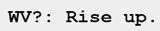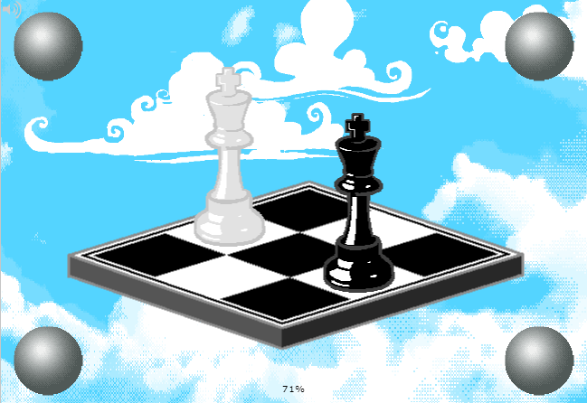
Chessboards = I better pay attention to this flash.
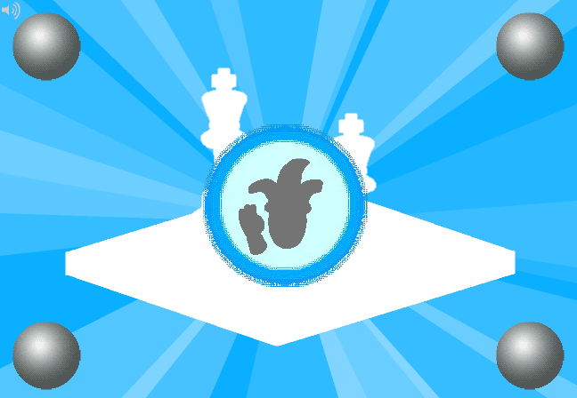
That’s… Harlequinsprite?? Long time no see.
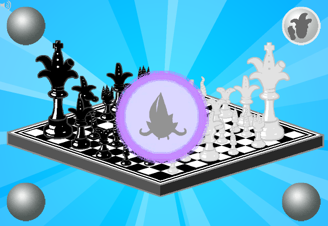
OOOOOHHH, I get it. I get it. This is how the battlefield evolves and changes with each new prototyping. Next up is Jaspersprite since Rose prototyped both times before entering.
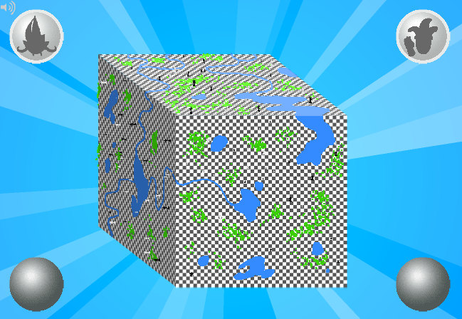
Wait. It became a cube with Rose’s prototyping?? With lakes and vegetation… Prospit and Derse inhabitants as pawns on the chessboard….
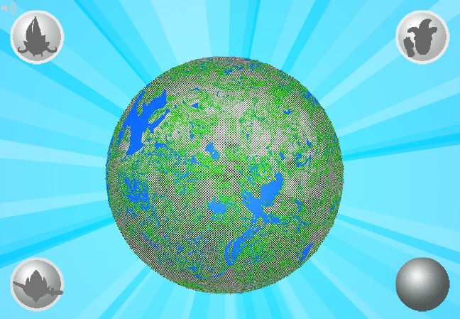
A planet now?? Does it become a galaxy or something after Jade prototypes?? Aaand yeah, we still have got no hint about what and who she is going to prototype. She should try with a frog and see what happens. Ya know, because frogs are spechul and impurrtant~~…………..Where did the cat pun come from. Oh, no. Jade’s furry self iS INFECTING ME HELP
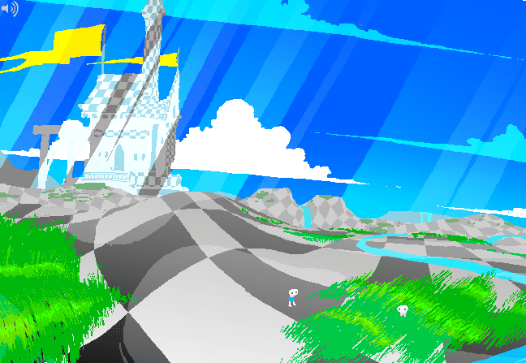
WONDERFUL NEWS THERE ARE CASTLES ON THE BATTLEFIELD WHY WAS I NOT INFORMED IT’S ALMOST AS GOOD AS DRAGONS I LOVE CASTLES LET’S EXPLORE THEM FANTASY SETTINGS SO GOOD
The Prospitian flag?? OH WAIT. There was one on the castle too. That means there are castles that belong to Derse too WHEN THE FUCK DO WE GET ON SKAIA
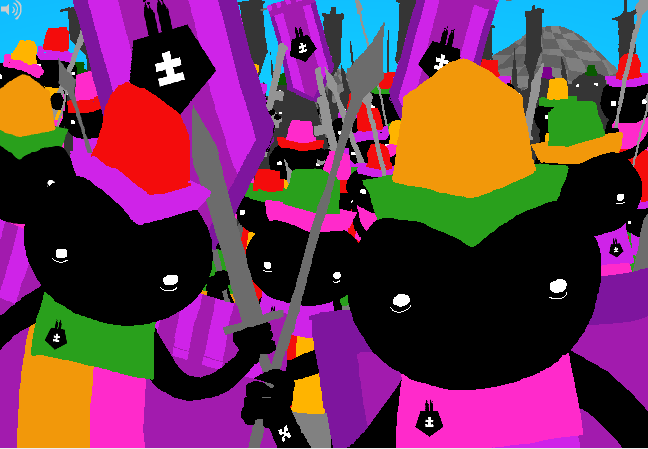
Yikes! The Derse Army!! I don’t like this, please make a U-turn, it’s too early to fight!
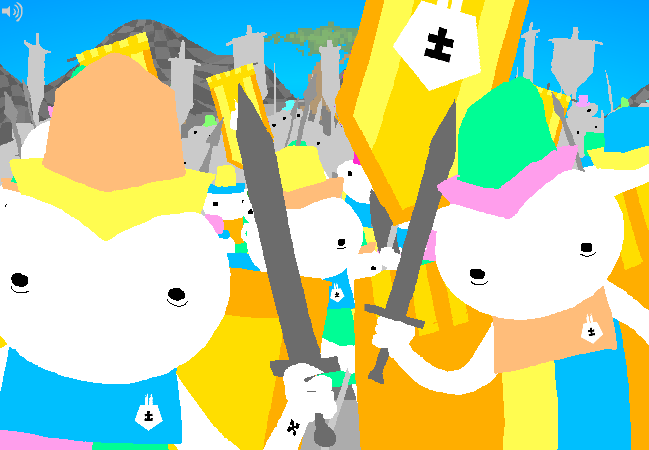
hERE THEY ARE. Let’s just… talk this out. Let’s not fight AT ALL. A troubling development but tHE MUSIC IS SO GOOD THO. SO GOOD.
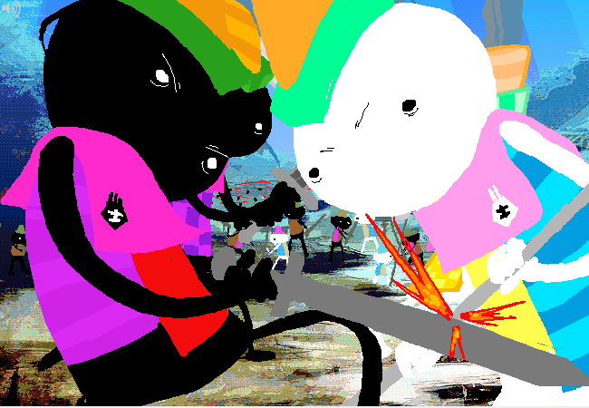
NOOOOOO YOU AREN’T SUPPOSED TO FIGHT!!!! I MEAN YOU ARE BUT PLEASE RECONSIDER!!!!!!! Sit at a table, make a truce, chill on the kids’ lands, Nanna will bake cookies for everyone……. be safe…
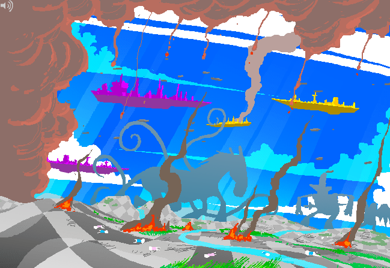
SPACE SHIPS???? OH GOD LOOK HOW MANY HAVE ALREADY FALLEN IN BATTLE THIS IS SO HORRIBLE AND THEY’RE ALL PROSPITIAN. PROSPIT IS ALREADY LOSING. DAMMIT
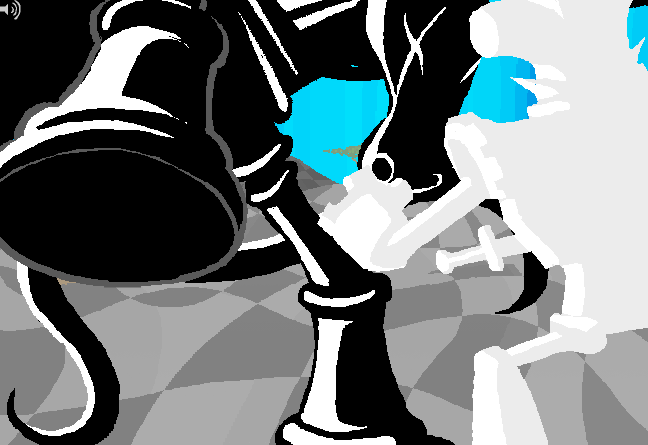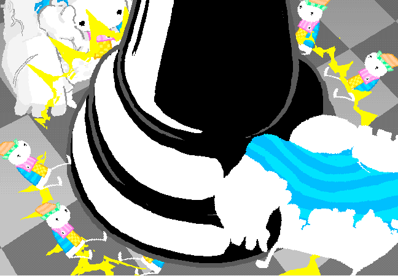
THE PAWNS ARE SO TINY AND THE OTHERS SO BIG LOOK AT THAT ONE CRUSHED OH GODNESS
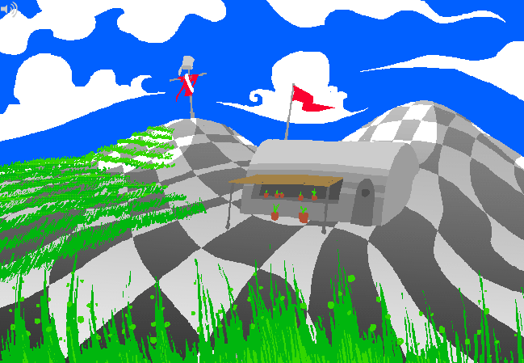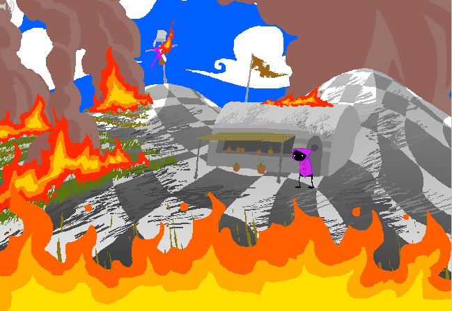
I AM VERY UPSET THIS IS NOT OKAY. He was only a farmer trying to lead a peaceful life in The Medium… Why…
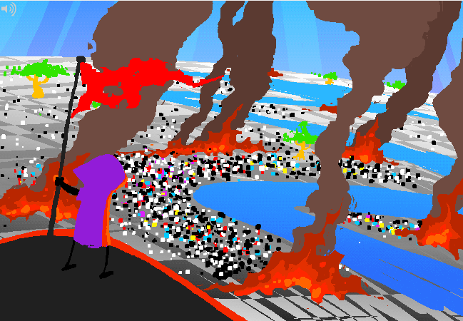
WV!!!!! You’re tiny and alone and where do you think you are going raising RED FLAGS. You’re not fighting anyone, you can’t even handle your trusty knife, stay put OR SO HELP ME
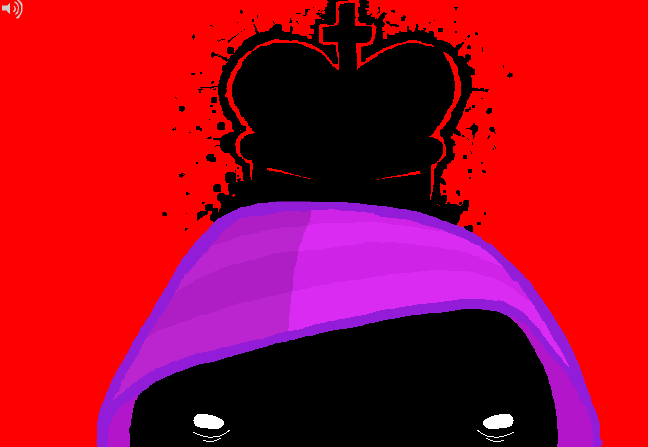
And now everything suddenly makes sense. His hate for kings and his anger at the loss of the black when he played chess…. This is all really sad.
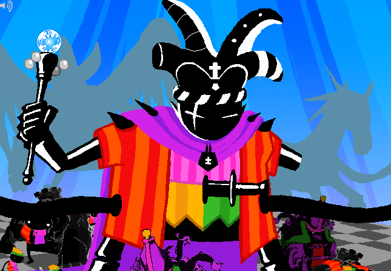
And apparently while the Queens have a ring the Kings have A SCEPTER.
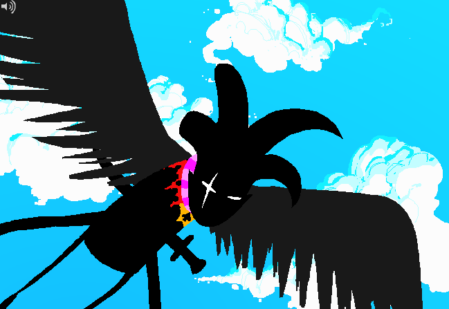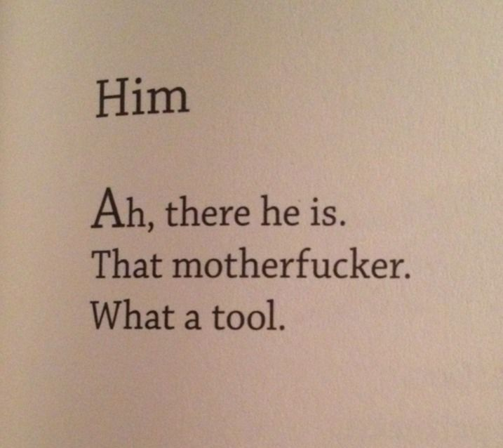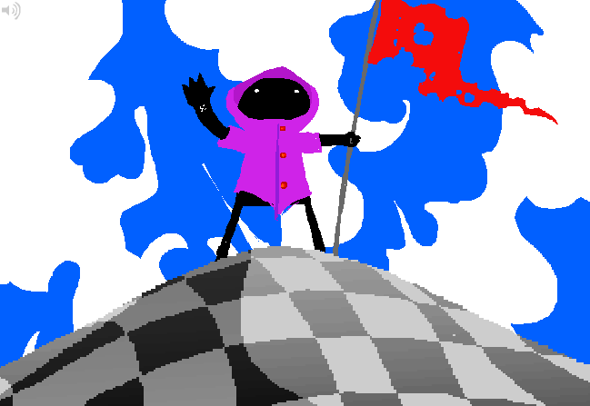
WHAT
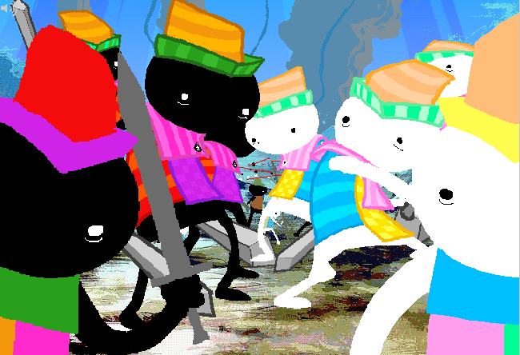
WHAT
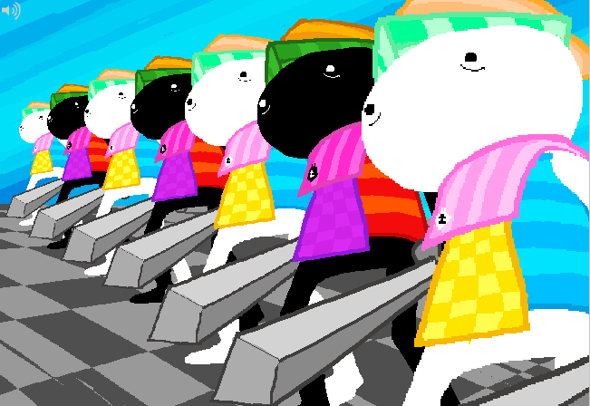
WHAT
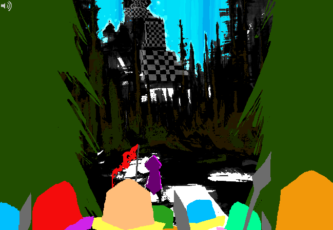
OH! That’s amazing! So when I, a fellow concerned reader, ask you to stop fighting and offer you cookies you keep shooting lead into each other, but when Mr Stranger in Weird Purple Hood does it you fucking create an army without even blinking WOW. Just wow. I think there was some sort of inspiring and really diplomatic speech going on but since the story doen’t cover it I’m just gonna say he shouted: “LET’S STOP KILLING EACH OTHER AND KILL THAT HUGE MOTHERFUCKER THAT LIKES TO CALL HIMSELF A KING INSTEAD” and everyone nodded and said: “You know what? Fuck this, he’s right. Imma go with Purple Riding Hood.” Truly a thought-provoking moment.
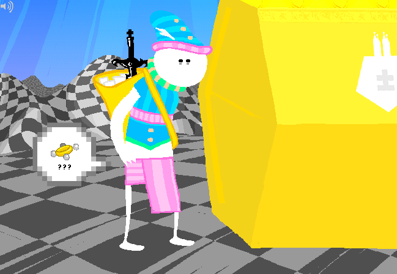
PFFFFTAHAHAHAH. PM you done fucked up!! You could almost say… that she fucked up… royally…
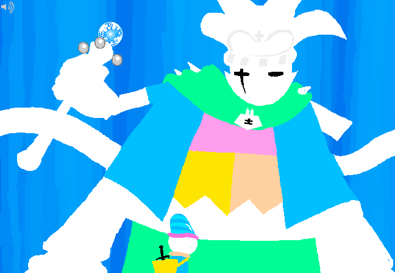
“Yes, Your Highness The queen sent me to seek audience about the Ring.” *
starts rummaging through pockets* Umh… I must have put it in my bag….. No, It’s n-not here….
*starts sweating profusely* M-maybe it’s in my hat?? *starts rummaging into hat*
(”what the heck are scotty dogs doing in here?!?”) W-well, Your Highness, it seems we are in a bit of a predicament *offers scotty dogs to him*
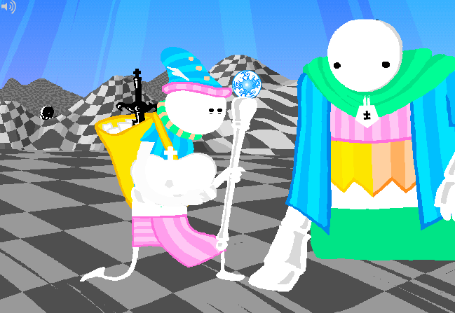
She just lost
the ring??? Stop giving crucial and super important objects to her??? OH NO. I spot a wild Boxcars.
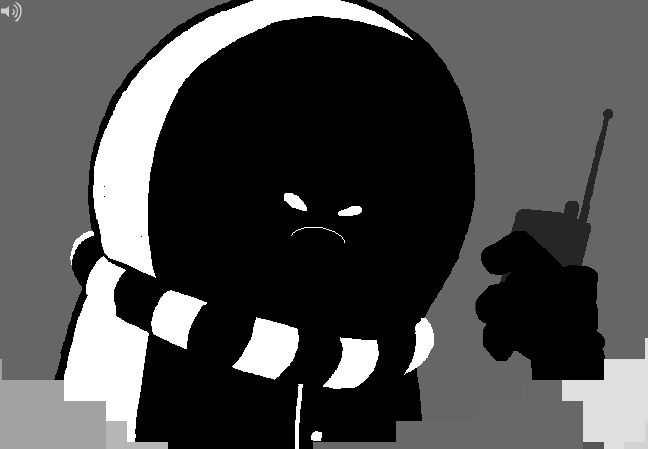
FFFFUCK THEY’RE AFTER THE KING
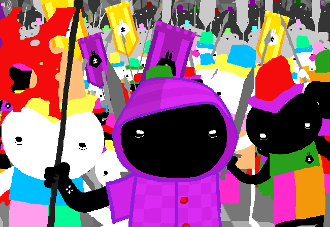
aLONE THEY’RE WEAK BUT TOGETHER THEY’RE INVINCIBLE *clenches fists* I love WV.
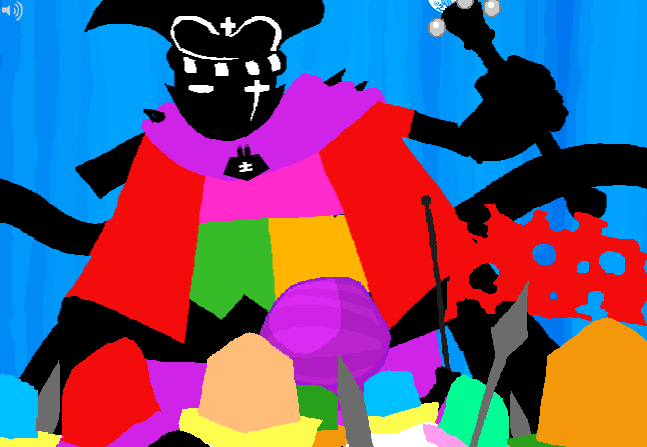
With all due respect, Your Majesty…. but honey you’ve got a big storm comin’
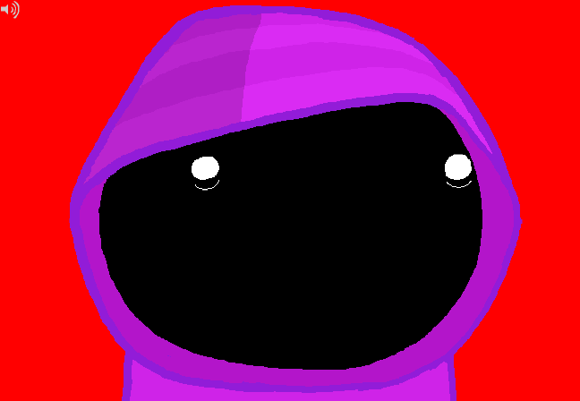
QUIZ TIME: There is a big feathery asshole with a sword through his torso in the sky. Am I talking about Jack Noir or Davesprite??
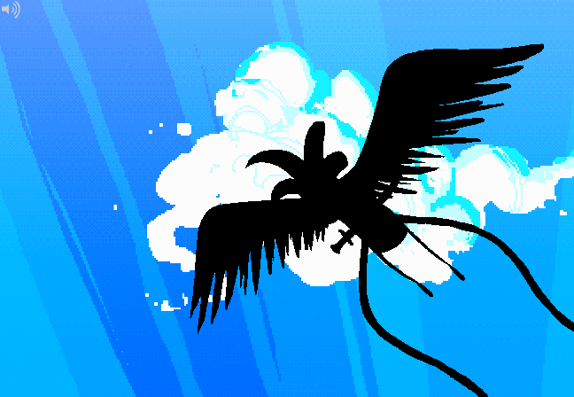
JACK NOIR!!!!
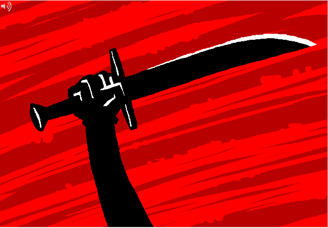
HOLY SHIT THERE HE GOES THERE HE FUCKING GOES
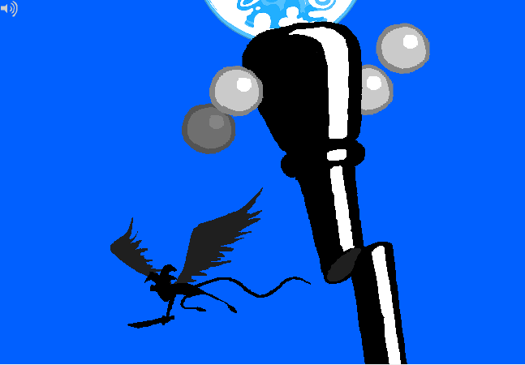
FUCKING HELL HE IS THE ONLY BLACK MONARCH NOW
What are those scepters
made of?? Play dough??? C’mon don’t skimp on something that important!!!
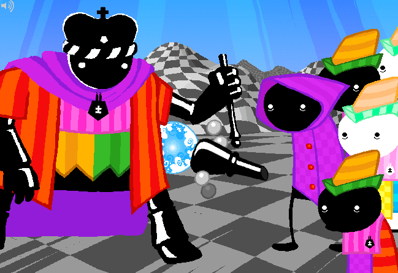
Whoops. Everyone is a little perplexed. I know, the Jack of Spades sure is a wild card, huh?
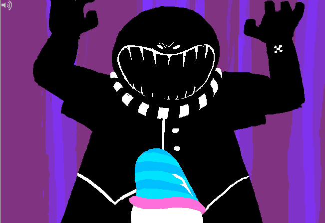
AAAAAAAH QUICK SOMEONE PROTECT HER
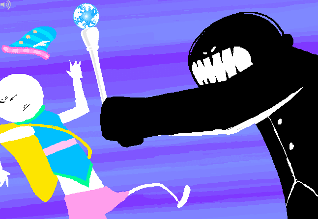
NEVER GIVE SOMETHIGN IMPORTANT TO HER EVER AGAIN ADNGIT DANGIT BOXCARS I WILL TRA CK YOU DOWN I WILL MURDER YOU
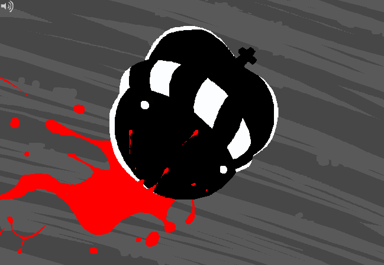
WTF WHAT THE FUCK WTF THE FUCK JUST HAPPENED
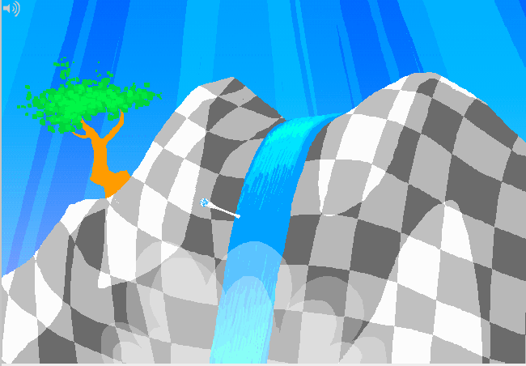
There goes the scepter.
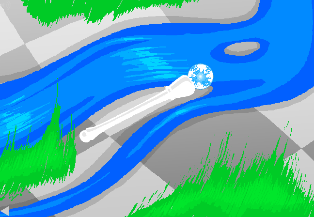
Yep, this won’t bite us in the back LIKE EVER. Obviosly. Not going to happen. We’re super safe. Safer than doing parkour on Dave’s Land. Above a carpet of lava. Yup. The king is also dead. Oh, well. Should have expected it, really. So?? Basicaly Jack is now the only one who can start the Reckoning?? By kidnapping White Queen and King?? But doesn’t the Queen get exiled right after The Reckoning though?? I’m confused. I don’t think this is exactly a normal session by the way. Things are just a tiny bit messed up thanks to Jack.
THIS IS HANDS DOWN MY FAVORITE FLASH THOUGH. I love it. The music is absolutely beautiful, the pace is great, and I love how everyone is minding their own business, PM going to see the king, WV starting a freaking revolution, Boxcars was tracking down the king, and Jack… Jack doing whatever he thinks he is doing…. but in the end they all meet here and their stories interwine… I think theree is a name for this plot device…. I can’t belive this is my favorite plot device and I can’t remember the freaking name. Damn. Anyway you ever read the Orlando Furioso (The Frenzy of Orlando)
?? The author is the fucking master of this. Everyone has their own goal but then suddenly they all meet up in one place and ALL HELL BREAKS LOOSE. I love it. He does it several times. ANYWAY. Moving on.
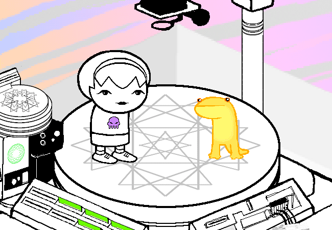
To Rose’s alchemy session!! Hopefully not as nonsensical as John’s and less disturbing than whatever Dave has in store for us. You just know he will use SBAHJ. I’m not physically nor psychologically ready for anything that might come out of it. But these are concerns for another day.
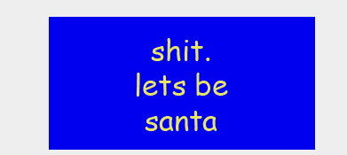
What… is this…? It has a link…. Oh. Oh, no. Fucking SBAHJ. I thought we where leaving it for Dave.
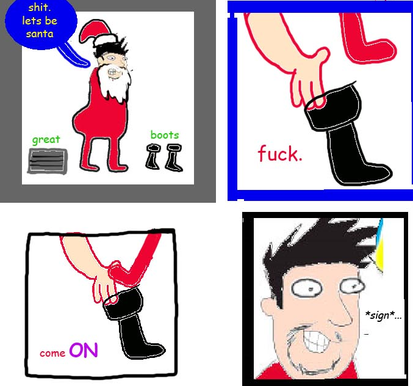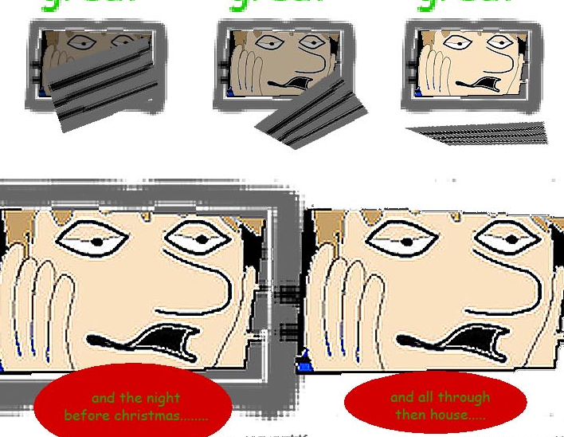
what is this?!,????? I…I don’t???? Heh?! Dave never ceases to amaze me. …Is this how Christmas is celebrated in the Striders household? With Bro hiding in the vent. And Dave in a little Santa Claus costume?? I want an explanation but at the same time I would rather not receive any and let this stay a mystery.
Rose: Combine hub and laptop.
So a laptop which never has to be recharged. Nice. I want one. I just gotta find a nuclear source of energy. And learn the arts of alchemy. One could become a millionaire selling things created through Sburb. Too bad that when they have the possibility their civilization has been already wiped out.
she is beauty
she is grace
she can’t keep a fucking straight face.
No, that’s it. I have nothing to say, I just wanted to show you her expression. Look at her. What a dork. I love her.
DO NOT COMBINE LIVING BEINGS ROSE JUST BECAUSE YOUR MOTHER CREATED MUTANT ABOMINATIONS IT DOESN’T MEAN YOU HAVE TO AS WELL. Actually she did it out of love for her daughter and Jaspers. You can always close an eye when something is done for love. Also because she knows no limit or boundary. And because she was wasted. Okay maybe you can’t close an eye on that. It was just kinda nuts.
You make a box of BODACIOUS BLACK LIQUID SORROW GUSHERS.
Another Crocker nightmare rears its ugly head. The ink reverses the healing properties of the blue phlegm. These are pure poison.
I guess you could use those as a weapon against the imps. Those little shits go crazy over sweets. Although they look like black goo and definitely inedible. I don’t think anybody would be that easy to trick and like gushers so much that they—……. Keep those things away from John, girl. Although they are Betty Crocker’s so there is probably no danger. What if you fed John some Crocker baked goods without him knowing? He would probably have an anaphylactic shock when he finds out. Or consider himself a sinner and move to Texas. Change his identity and become a runaway. In short, let’s not do that.
And to Dave’s pleasure she can’t bury this one under three inches of fucking yarn. It looks like those devices that the Saiyans use to detect the strength of their enemies tho. Does that mean she is the last female descendant of a powerful alien race. Of course. The foreshadowing is all here!!!
You can finally knit presents that will enchant everyone, I guess?? I wonder if she knits everything in purple because it’s her favorite color or because she didn’t dare ask her mother for yarn in other ones. Fearing the possibility that she would take up the hobby because she genuinely likes it to antagonize her. Oh, boy. If MOM began knitting she would resort to never buy clothes for her daughter in stores anymore. Yarn in every season. Kitty sweaters in August.
DID SHE JUST MAKE WANDS. Okay, I don’t get the point of having roles assigned by Sburb if the kids are going to fucking ignore them and do as they please. The game is self-aware. It knows what’s best from them and what they are supposed to become. She wants to be a witch??? So be it, see if I care!! Next on John will master the art of time travel and Dave will….. Dave will do whatever an Heir of Breath is supposed to do. Handing out fresh mints to everyone, I’d guess. A noble mission nonetheless.
And to your left you can see the girl who absolutely loathes wizards. That’s why she made herself a pair of nice wands. Because she despises those creatures. And that’s why she made a cool outfit to go with the wands too. Because she hates them. Obviously.
HOW ABOUT THE FUCK NO. ROSE, WHAT THE HELL. AHAHAHAHAH. What a funny JOKE, Rose. Laughing my ass off over here. Of course you would never do that. It would be crazy as fuck.
AAAAAAAAAAAUUUUUUUUGH SHE IS FCKING CRAZU FUCKING CRAZY ABXDOLUTELY DERABGED!!!!! DRANGED!!!!!!! DERANGED!!!!!!!!!!!!!!!!!!!!!!!!! HOLY FUCKING SHIT ROSE LALONDE YOU DISGRACE YOU DAUGHTER OF A WIZARD FANATIC YOU SORRY EXCUSE FOR A LIGHT PLAYER YOU
I NEED. To storm the anger off. And reflect on the horrible consequences that this development will have. Because. There will be. Horrible consequences.
You make the THORNS OF OGLOGOTH.
The needles seem to shiver with the dark desires of THE DEEP ONE. Any sane adventurer would cast these instruments of the occult into the FURTHEST RING and forget they ever existed.
Hey, guys. Remember when Rose had enough common sense not to mess with the Horrorterrors powers and using them as a weapon?? Well fuck, THOSE SURE WERE FUN TIMES. Rose…. Thorns… Why…….
Who is this Deep One dude by the way I gotta check
And of course there’s OGLOGOTH, THE DEEP ONE. Whenever he grinds his teeth, all the children of a random galaxy somewhere will frown continuously for a nine thousand year span.
……………………………………………………………….Those poor trolls.
He is the first and smallest of the SMALLER GODS, appointed in servitude of a vile, unfathomable pantheon of MIDDLING GODS which caters to the whims of the NOBLE CIRCLE OF HORRORTERRORS, an omniscient, omnipotent order of the elite few, forever cloaked in the darkness of the FURTHEST RING.
HOW GREAT. LEMME MARK DOWN THIS DAY ON MY CALENDAR. AS THE DAY IN WHICH ROSE LALONDE MADE A GREAT DECISION. THAT WON’T EVER HAVE ANY REPERCUSSIONS. EVER. Look, she is borrowing the powers of creatures she doesn’t want to mess with. I won’t be there to comfort her when they show up to claim her soul, her first born and the last kitty she adopted!!!
I… *think* Casey is happy with her new toy?? She looks like she’s hyperventilating. Well, it’s always like that. All in all it was a nice alchemy session. We made way less crap this time around. Okay, we have a bronze vacuum but maybe we can give it as a recycled gift to MOM. She wouldn’t notice and would be delighted.
WHERE DID ALL THOSE FUCKERS EVEN COME FROM. Oh, no! It’s the gushers. They tracked down the putrid smell. Truly a double edged sword of a weapon! Also ogres made of chalk look like they all have very well-groomed mustaches, it’s hilarious.
(don’t use the wands don’t use the wands don’t use the wands)
ROSE. You are still in time to throw them to the bottom of the ocean. ………….ROSE.
Yes!!!!! Amazing!!!!! Let’s give incredible powers to the girl!!! As if she wasn’t reckless enough already!!! Miss “I will just throw myself down a waterfall and see what happens”!!! Who had this wonderful idea WAIT HUSSIE IS WHO
Was…… Was that weird skull monster wearing Rose’s scarf. What’s with monsters stealing the kids’ stuff seriously, you got raging kleptomania. Or it is just their last futile attempt to look fashionable. John did condemn them to wearing clown garments forever. Truly a curse for the most fashion oriented imps.
WELCOME TO THE PARTY MOTHERFUCKERS
Rose Lalonde’s famous last words. ……….Okaaaaay, okay. I’m exaggerating and blowing things out of proportions. Got it.
It’s up to Jade to cheer me up. She better not start messing things up too.
It’s already night?? What happened to “You have a feeling it’s going to be a long day.” That sounded like a really suggestive quote. Well, technically John will never see the day of his birthday reach its end. It will always be the 13th of April hEY GUYS. I FIGURED IT OUT. Homestuck won’t actually ever end. It will go on and on and on forever. It is up to you if you want to keep reading even if you will never know how the story ends or give it up altogether. …..This is a question that haunts tha Detective Conan fandom everyday…..
I mean I really liked Detective Conan the cases were great, the characters likable, the black organisation intriguing but I just want this to end now I want closure …
This is how the Homestuck fandom will end up.
By the way I’m pretty sure frogs don’t usually have red eyes. There must be some nasty things in that water. Maybe it’s better if we do not prototype one.
NIIIIIIICEEEE!!!! Look, so perfect even if she’s asleep! But there are so many stairs! :o Dave and stairs don’t get along. …. And to cushion his fall there is a nice carpet of hot lava…… oh booooy. Then it wouldn’t keep happening, it would happen one time and sayonara to Dave Strider!
What does that woman think she’s doing with that bucket of paint??? Holy crap, it’s an impostor! She painted herself white JADE SHE’S SPYING ON US SHE IS A SPY FROM DERSE AND IN CAHOOTS WITH JACK & CO.
Speaking of naps, you have been asleep for some time yourself. You suppose you’d better wake up soon.
But then, your neighbor in the other tower is supposed to be waking up soon too, and it sure would be a shame if you weren’t around to greet him!
*LE HUGE GASP* JOHN IS GOING TO WAKE UP. JADE AND JOHN WILL MEET. I REPEAT
JOHN
AND JADE
WILL MEET
This is so important for Jade! She has probably never even met anyone beside her Grandpa!! She never had the occasion to hang out with kids of her age!!!! This is so important and great for her, such a huge step! You go, Jade, you go, you can sleep through the entirety of the next act to show John around Prospit HAVE FUN ILU
Dave: Wake up and jam.
And by jam you mean alchemize of course.
Waaaaait. Right now?? I thought I had some time to better ready myself before subjecting to this! Alright, the sooner I do it the sooner it will be over.
Whoa your house is huge suddenly.
Anyway let’s get this party started.
Lalonde just started one herself, things got pretty wild on Rainbow Land. I heard all the imps are already wasted, they hit up MOM’s booze.
And your house did not get “suddenly huge”!!! This is the fruit of Jade’s hard work, work that she is doing only for your benefit to build something “so cool”. As cool as she genuinely thinks you are. And as much of a jerk as I think you are when you told her to stay asleep and refused her help thinking you could handle everything on your own during your entry. So be fucking grateful for what she is doing, you little shit.
That was Davesprite’s idea, not yours. Do not steal his ideas. That’s uncool. And being uncool is blasphemy for a Strider. Well, technically… I think it would be Dave’s idea as well though. They are the same person. He could have come up with it just as well. I will…. be thinking about this….
You make the TURNTOP.
Convenient computing on the go. Sort of like you have with your iSHADES, but with all your important files and apps on there. Not to mention Sburb.
Plus MAYBE it has some weird time powers??? You have no idea. You’ll mess with it later.
I think that nowadays there are better ways to erase every trace of your sins in the internet chronology than going back in time. Seriously, Dave, that’s drastic.
THE HORROR HAS BEGAN— Umh. I meant… That sure is a sharp suit you’ve got there.
You add a SMUPPET to the mix to make a softer and more stylish RED PLUSH PUPPET TUX. It is like walking around in snugly pajamas.
ACTION PAJAMAS.
Trust Dave to go face monsters wearing fluffy pajamas.
You combine a couple more items you got from future Dave’s loot stash. The broken form of CALEDSCRATCH, and some RUBY CONTRABAND, whatever the hell that is.
The resulting item costs a fortune. You have no idea what it is.
Wanna know why it costs so much?? Because frogs. Frogs is why. When in doubt, the answer is always frogs. You can’t possibly go wrong.
I guess the kinds of grist that are still unavailable will become accessible after Jade enters the game. No weird frog swords for you Dave, not till Jade has gotten her narcoleptic butt on her Land at least.
THE ALCHEMITER HANDS OUT SBAHJ ITEMS AS FREEBIES OH MY GOD
I don’t know if that is the actual name of the thing or the alchemiter has a consciousness and it is judging Dave for creating that crap…. “Did he just really make….. A SORD….”
You use one of your BRO’S really shitty swords from the fridge and a printout of Hella Jeff to make a SORD…..
This thing is so unspeakably shitty you are having a hard time even holding it.
Don’t you know anything, Dave?? I thought you were the genre savvy of the team!! This is obviously an example of Chekhov's gun and that sword will come back in the middle of the final battle as the only thing capable to finally end Jack’s life. Dave not being able to hold it is only a metaphor of him not being ready to be a true hero as he has yet to prove himself worthy. It’s like Excalibur. But so much shittier BETTER.
You make UNREAL AIR.
It is UNREAL how much shitty that thing is. It is so inconceivably shitty that it defies gravity since gravity wants nothing to do with that shit. Shit encompasses every boundary of badness and decent taste.
“what is this crap that the kid just made?”
“don’t look at me i have nothing to do with that awesome and super cool person and i sure did not have the exact same idea in the past what are you talking about”
THE FELT SMUPPET….. HASS THE BOOTY
WHTA THE FUCKI S THIS??????????!!!!!!!!!!!!!!!!!! WHAT HOW WHAT WHY
OKAY FIRT OF ALL WHY THE FUCK DOES HE OWN A FETUS IN A JAR
SECOND
SECOND
NO WAIT SERIOUSLY WHY THE FUCK DOES HE OWN A FETUS IN A JAR
You’re looking pretty chill with your new freakshow entourage.
The underlings all look kind of put off by it though. You’re kind of weirding them out.
They are not the only ones. I’m kind of terrified myself. That…. could work like a fighting strategy?? Perhaps?? He walks through crowds of imps and they open up in front of him like the freaking sea in front of Moses. They are scared. They fear him. If he catches them, who knows what kind of experiment he might try out on them. There are stories circulating. Of imps made into smuppets. Entering the young boy’s house and never seeing the light again. They regard him as their Lord and offer five young sacrifices once a month hoping to calm his wrath. It doesn’t work. Deep down they know it never will.
This got really dark all of sudden like it always happens when I write anything off target so in short don’t let me go off target too much or I will start writing horror/thriller stories soon
You make the CAPTCHAROID CAMERA.
You can use it to snap a ghost image of any object without captchaloguing it. Spits it out on a brand new captchalogue card every time.
THAT’S CLEVER! This might come in handy in the future. You can chaptalogue very big things that you normally wouldn’t be allowed to before………….
You take one of your patented ironic cool guy self portraits.
Man. So cool.
thats really all there is to say on the matter
“Ah yes. I have the possibility to grab codes for everything that my eyes can see. BUT FIRST. Let me take a selfie.”
WHAT
THE FUCK
WHAT
HOW DOES IT END UP MAKING HIS BRAIN AND NOT HIS FETUS EEEEEUUUUGH I WILL STOP THINKING ABOUT IT
Is this. some kind of foreshadowing. Like Icarus. That fled too close to the sun and got his ass burned. But I don’t want Davesprite to get his ass burned…. Be careful, Bird Boy. T.T
Dave still managed to make his alchemy session the creepiest. And Rose made wands with the powers of THE DEEP ONE.
Can’t forget the most important thing you came up here to make.
Gotta be gettin’ your snoop on.
That fucking 13 years old delinquent. I’ll call the Sburb police on you. I’ll get you arrested for horrible snooping business against young ladies. There is a law specifically for that, of course. AR is going to take care of you personally. He will take away all your cool gears and your sunglasses. And when you will be crying and regret everything there will be no shades to hide behind sEE??? DON’T LET ME WRITE IT GETS DARK IN A PARAGRAPH. Okay maybe I’m just in a weird mood tonight
One book is titled “MEOW”. The other is titled “Complacency of the Learned”.
Gee, you wonder what could be in MEOW.
If you’re going to do this, do it fast, and keep the awful sassy attitude to yourself. Count me out. I will just turn around and go scream gibberish about how rude you’re being in a corner.
YUUUUUUUUUUP. GENETIC CODE. Rose was definitely losing her marbles over this. And all Jaspers did was meowing. Incredible. I wonder why after MOM saw all this she didn’t just buy her another kitty. Or knowing her, brought home literally any living being from the nearest animal shelter. Yes, employees included.
To no surprise at all, this book is full of more MEOW letters. Looks like Rose is totally nuts. What else is new.
Says you, Mister “I will just combine the hologram of my own brain with some borderline pornographic comics and see what happens”. There is literally no one that is completely in sound mind in this webcomic. Well, maaaaaybe John?? Nah, he deliberately chose to spend what could have been the last thirty seconds of his life making out with a Liv Tyler poster.
You guess you’ll try out the other book. Looks like it’s some sort of creative writing project.
OH NO HERE COMES THE SLASH WIZARD FANFICTION. Plot twist: it’s not yaoi, it’s yuri. And as a rule of thumb everybody is either magic, gay or both. There are ponies. OKAY. Okay, kidding. …Mostly. I am fully aware of the fact that Rose would be a majestic writer. She would probably write books with a super complicated plot. With thirteen subplots. All handled perfectly and no loose ends left. And over complicated and incredibly subtle foreshadowing.
Frigglish bothered his beard, as if unkinking a hitch in a long silk windsock.
FRIGLLIHDKò FRIGGLISH OH MY GO D OH WHAT KIND OF NAME IS THAT GOD
A more pedestrian audience would parse the exhibit as nervous compulsion. Behavior to petition contempt among the reasonable. He was however not surrounded by the reasonable, but the wise, a distinction in men that would forever be the difference in history’s garland of treasured follies. As a matter of fact, his cadre of fellow wizards were all putting similar moves on their beards as well. The practice would evince thoughtfulness - sagacity, even - if they didn’t do it all the time. Standing in line at the bank. Shooing squirrels from bird feeders. Few occasions were safe.
*glares* Purple prose….. *opens Thesaurus* I’m not ready………
Zazzerpan inspected the clue. A single piece of evidence cradled in his coriaceous old man palms.
ZAZZERPAN. DEAR GOD. THIS MEANS……. DEAR GOD.
It was a human bone, not striking in the tale it told alone so much as that told by the thousands like it festooning the marshy soil of the mass grave. The grisly expanse bore the texture of a decadent dessert, like one of Smarny’s formidable custard trifles wobbled out on wheels for the holidays, to the dismay of a small nation.
“You’re certain of this?” asked Frigglish. Despite what he was doing with his beard, he was, in fact, immersed in meaningful contemplation.
“I am afraid I am becoming more so with each terrible tick groused by that gaudy timepiece slung around your neck.” In case it wasn’t clear, Frigglish wore a clock Zazzerpan didn’t care for. It was magic. “The massacre of Syrs Gnelph was not as written."
"What has you convinced it was the hand of our disciples in this blackness?” Executus chimed in.
“I believe… I…” a fat face stammered, eyes darting with the guilt of a thief in the throes of an unraveling alibi. “I can summon a… more pressing line of inquiry…” No, Smarny. Nobody was in the mood for a sticky bundt loaf just now.
Zazzerpan’s ears fell insubstantial to any line of inquiry, pastry-oriented or otherwise. His abstruse contour carved a pondering shape in the fog carpeting centuries-dead. His eleven contemporaries too embraced the muted consternation of their great Predicant Scholar. Few wizards kept sharper adumbratives or read them with such lucidity. When Zazzerpan treated men with silence it was seldom unrepaid by the wise and reasonable alike.
It was harrowing to entertain. Zazzerpan the Learned’s storied Complacency of Wizards was marked for grander descendence. Disciples hand-picked, vetted by Ockite the Bonafide and tested by Gastrell the Munificent. The twelve sweetest, most studious children a pair of elderly eyes could give their sparkle. Not the ragged guttersnipe so oft-harvested by the common Obscenity, those vituperative little beggars with hearts to corrupt as dropped bananas brown. That these chosen youngsters would turn was not merely unthinkable, but something of a roundhouse to the temporal bones of the Upper Indifference’s high chamber of Softskulled Prophets.
His wisdom-savaged brow pruned further with recount of his many lessons to would be successors. Lessons to advance humanity’s elucidation and prosperity, an outcome this bleak trail now painfully obviated. There were few puzzles The Learned could not suspend and dissect in the recondite manifold beneath his extremely expensive pointy hat. Daring to pitch his cherished pupils in with the foul melange of history’s rogues, the heretofore abstract scourge that built up civilizations with ungodly magic and tore them down with joyful malice, would prove an intellectual trespass to make his calcium-deficient bones quake.
And more daring yet was the only question that now mattered. Could a bunch of bearded, scraggly old men in preposterous outfits hunt them down? He didn’t have an answer. Only a simple observation so blunt and uncharacteristically jejune for the lauded sage it was breathtaking in its selfevidency.
“We’re going to need more wands.” (Wow. Think of something better.)
You mean “WOW THIS IS SO FUCKING GOOD GIVE ME A NATIONAL BOOK AWARD????" WOW. THIS IS GOOD????? Like seriously, I want more. Which is obviously the first objective of a writer, keep the readers hooked. Wow, Rose. Good job??? Not that I expected any less. ALthough she is seriously bad at giving names. Seriously bad. Frigglish?? Smarny??? ZAZZERPAN. OH GOD, ZAZZERPAN. Mom read this. She read this story. And OH MY GOD THIS IS SO FUCJINV WONDERFULLY MESSED UP. Their effing relationship. Look, I know she should really stop drinking, and she is so incredibly bad at communication but. I adore MOM. She is so bad at this but she tries SO HARD to be a good mother and it’s so evident how much she loves her daughter and I just… the only one who doesn’t realize it is Rose herself. Because MOM finds and reads Rose’s story. She loves it and wonders why her kid didn’t show it to her. So she wants to let her know that she loves it and she loves wizards and it is okay to share an interest. She does the simplest thing she can come up with. She puts a twenty feet tall statue of one of the protagonists of the story in the living room. But she forgets that her daughter is Rose Lalonde. A kid that trusts nobody’s judgment but hers. And Rose Lalonde sees the statue. And the explanation seems so clear to her. Her mother read her story and she’s making fun of it. Feigning interest in it. So Rose hates the statue and MOM is left wondering what she did wrong. And holy SHIT this is such an incredible mess. I hope they can sort this out real soon. :(
This wizard story seems really involved and kind of confusing. You’ll have to save your place and dig into it later, and then maybe ask Rose what the hell the deal with it is.
Can you dig into it while I’m watching, I wanna know more about Zazzerpan & Co. Also you may want to keep your inquiries to yourself, because just chime in and ask Rose "hey whats up with your wizard fanfiction” may kind of… be a dead giveaway… of the fact…. THAT YOU KNOW SHE WRITES WIZARD FANFICTION, DUMBASS.
You return to your room in search of a bookmark.
Oh, hey. Finally a use for that pointless juice stained beta that will never serve any purpose, past or future.
subtle
[suht-l]
adjective, subtler, subtlest.
fine or delicate in meaning or intent; difficult to perceive or understand:
subtle irony.
Send this definition to Andrew Hussie, please.
You drop it on the john in case you’re looking for some reading material later.
I did not know john was slang for toilet, so I got really confused for a moment there.
Miss “I’m a witch and I know it so screw Sburb” definitely needs to be checked on at the moment. Good idea, Dave. Monsters are seeking refuge on Prospit and Derse. Emigrating en masses. Rose Lalonde's Reign of Terror has began. Yes, I’m finished being over dramatic, if you were wondering.
WHY THE FUCK IS SHE BURNING HER BOOK????¿¿¿?? Casey, don’t just stand there, do something, stop her!!
TG: whoa why are you burning your wizard fanfiction
SERIOUSLY.
SERIOSLY DAVE????
SERIOUSLY??????????
…………………………………..Remember when I said Jade was the worst liar in the Incipisphere? Well, I take it back, at least she makes an attempt. Dave here isn’t even trying.
TT: I’m not. TT: This book contains a genetic code.
THAT’S EVEN FUCKING WORSE
TG: oh ok TG: then why are you burning that TT: The gods from the Furthest Ring asked me to.
?????????????????
¿¿¿¿¿¿¿¿¿¿¿¿¿¿¿¿¿
Ahahahaha. She is gone. Two minutes with the wands. I told her to fling them into the sun as soon as she could. Now she is in La La Land with the Deep One. Adieu, Rose Lalonde. It sure was a pleasure knowing you.
TG: is that some dumb wizard thing you just made up TG: or something to do with tentacle monsters TG: i cant keep track of what you like anymore TT: How did you know I wrote a story about wizards, anyway? TG: john told me TG: he was all snoopin around your room while you were asleep and i was like no man dont TG: so not cool TG: then he was like haha dude check it out this book is full of wizard slash TG: and i was like i dont even want to know this is such a crazy violation of privacy
I’M GOING TO KILL HIM AND FEED HIM TO HIS DENIZEN JUST YOU WATCH ME
TT: This story sounds suspicious.
That’s because you know that Egbert has some morals and would never invade your privacy like that while you know that Dave is a despicable little shit.
TG: do you want me to chew him out about it i will because that was so outrageous i dont know where he got off being like that TT: No, I don’t actually mind. TT: Too bad I missed him.
SHE WANTED TO MEET HIM. I will never let this go. I will be angry at John forever. I will ask GC to trick him into seeing his denizen again. She would find a way, she is a smart girl. Where did the trolls go by the way. Is it just me stalling on this pages for like a week and half or have we really not heard from them… since like… two decades ago?? I thought we were nearing the introductions.
TG: i thought you hated wizards TG: whats the deal with that TT: I like wizards. TT: What I don’t like is my mother’s obsession with feigning interest in them to antagonize me.
AAAAAAAAAAAAAAAAND I GOOOOOT IT WROOONG ALL ALOOOOOOOOONG
AND ROSE IS ACTUALLY OUT OF THE CLOSET. THE WIZARD CLOSET. WHERE SHE KEEPS ALL KINDS OF MAJYYK BULLSHIT.
TG: oh man thats so messed up TG: that you think that TG: she probably digs wizards for real just like you and youre blowing shit out of proportion like pretty much always TG: you and she could probably have been chatting up how awesome wizards were this whole time but no
THE KNIGHT HAS SPOKEN
HIS JUST WORDS SHALL BE CHERISHED AND HE MUST BE REVERED FOR GENERATIONS TO COME
“man thats so messed up”
“your mother probably digs wizards for real”
Wise. Oh, so wise. Such wisdom has never been seen in a kid of such a young age.
No, but seriously. There is a reason why I always and always will headcanon Dave as the one who will get Rose to come back to her senses if something happens.
The Dave approach is the only one which would work. The “I don’t give a shit but let me tell you this one thing” approach. While people like John and Jade might try to lead her to a conclusion, use a more “I will fix/save you” approach when it comes to help a friend in trouble. And Rose would find the whole thing positively outrageous.
INSTEAD people like Dave will let her work it out on her own. Because she might say “no you’re wrong” in the beginning and move on BUT. But the seed has been planted. It’s always at the back of her mind. What if they are right and what if she is the one in the wrong. And she will brood over it. And eventually, maybe not anytime soon, maybe in two decades but the realization will hit her. “oh my god my mother fucking loves wizards im so stupid”. Something along the lines of this, but purple prosed. Rose Lalonde Style.
And this could be potentially amazing. Or potentially disastrous. Because one of the most defining traits of this kid, what makes her who she is, if you ask me at least, is her lack of self doubt. She believes in her self, her abilities and trusts her judgment completely. BUT IF SHE EVER STARTS DOUBTING HERSELF AND HET JUDGMENT AS A RESULT OF A MISINTERPRETATION WE ARE IN TROUBLE. Self confidence is optional when it comes to be a successful Witch but necessary when it comes to be a successful Seer. Confidence is the key. A Seer predicts, gives an interpretation to what she sees, and acts consequently. If a Seer feels inadequate, if she doesn’t believe she can do it, she stalls and doesn’t take decisions. And then we go from what could be a too active witch to a too passive Seer.
I’m not sure if I’m being clear enough, I don’t have much information on the roles, but of course they are more than just cool titles, they have an impact on the kids personal story. So I’m just trying to give a realistic point of view on Rose while putting it into perspective with her role?? I don’t know, I may return to this later.
TG: youre probably burning your nutjob meow book to spite her too arent you TT: No, I told you. TT: It’s one of the gene sequences locked in my subconcious. TT: The gods say it’s critical to destroy it.
BUT LET ME SAY A THING FIRST. You do as they say without even questioning their motivations?? What are you??? A servant that does their bidding?? Why doesn’t this elite of omniscient assholes come and take care of the journal thEMSELVES WAIT NO FUCK LET THEM STAY WHERE THEY ARE FOR GOD’S SAKE
TG: oh yeah TG: i thought that was a joke TG: when did they say that TT: When I was asleep. TG: you mean when we were dancing and stuff in our dreams TT: Yes. TT: When I flew to your tower, I heard them. TT: They’re far above, in the dark sky.
OH BUT AT THIS POINT THE WANDS ARE THE LEAST OF HER PROBLEMS. She was already all buddy buddy with the Horrorterrors before she even knew they really existed. Of course she does as they say. It was like a dream come true for her. She had fucking posters of them in her room. It was like meeting her idols for the first time. Some girls get wobbly knees when meeting teenage boybands, she does when meeting The Circle Of The Horrorterrors. HOLY SHIT WE ARE IN SUPER IPER TROUBLE. DAVE, DO SOMETHING.
TG: ive never seen or heard these things in my dreams TT: Aren’t you often distracted? TT: By music and puppets? TG: uh yeah TT: Have you ever looked into the sky without your shades? TG: no what a ridiculous question
Dave?? Removing…. his shades?? What does that even mean?? Rose, what are you on. are you even hearing yourself. where do this preposterous suggestions come from. take a chill pill. Just because you just did outing as a wizard fanatic doesn’t mean he has to do shit. Man, this is so outrageous.
TT: Maybe you should try it some time. TG: …. TT: You’re the prince of the moon. TG: …….. TT: I’m sure they’ve been meaning to seek a royal audience. TG: …………………….. TT: What do all these dots mean………
Excuse you, not everyone wants to go and ask the Deep One for an autograph like you. Dave is actually reasonable. He would rather have a Nicolas-Cage-only movie night with Egbert than seek the Horrorterrors’ council.
TG: dunno TG: anyway yeah i guess ill do that TG: get some sky monsters to boss me around sounds cool
He is…. he is being sarcastic, right? Dave, I want at least one of the Derse player in their sound mind, I don’t ask for much KEEP THE STUPID SHADES GLUED TO YOUR NOSE.
Davesprite: Also pester.
There goes Dave…………sprite. Davesprite. Can’t I just omit the sprite part and call it a day, I keep getting them mixed up.
TG: so really why are you burning that TT: I just explained this to Other Dave. TT: Do I have to explain everything to you twice now? TG: no i know TG: im using daves spare computer i saw the whole conversation through his pesterchum account TT: Oh, I see. TT: So instead of having to double explain, I merely have to put up with being double spied upon. TT: What a relief! TG: i just mean TG: you didnt burn that book in the future TG: that book was completely pointless TT: I know. TT: But now it’s not. TT: You appeared to make it relevant by traveling to the past.
Is it because of Davesprite or is it because this is the timeline which events will lead to the big fuck up with the trolls. If Davesprite had not gone back in time, John would have died and we would have ended up in alternative timeline material. Wherein not even the trolls contact them anymore because the catalyst for the trolling ensues never actually was a thing that happened IN THAT TIMELINE. So if we steer clear from the story as the trolls know it we get an alternative timeline which is an alternative (a not so appealing one) to the one we are in right now which is like… THE ONE TRUE TIMELINE or something. I’ll call it OTT. …I think. I’m not good at these kind or stuff, please be lenient. T.T
TG: so does that mean the sleeping thing worked TG: you remember the future TT: I remember some things.
SHE KNOWS SHE HAS GOT ALT!ROSE MEMORIES OH MY GOD
TG: ok cool TG: so why is the cat code so terrible now TT: I don’t know. TT: But the gods were pretty emphatic about it. TG: well ok i guess its done but why are you so sure theyre right TT: Have you ever known them to be wrong?
Who are you and what did you do to Rose Lalonde. Our Rose would never take orders from anyone, LET ALONE do something without questioning the motivations behind it.
And what does that even MEAN. We’re not questioning the right or the wrong, we are trying to figure out if burning that code was the right thing to do in your interest or in theirs. Do the Horrorterrors have their own freaking agenda?? And in that case are they using Rose to reach their objectives??? Those are the questions.
TG: i guess not TG: but they sort of freak me out TG: i mean listening to gross space mutants all day isnt my idea of an awesome time TG: especially the ones that sing oh god TT: Is that why you always kept the music turned up? TG: no i flip out to ill jams because they kick ass TG: obviously TT: I guess we’ll chalk another riddle up in the solved column. TG: yeah case the fuck closed
The Strider brand of denial runs too deep. Oh, no. He does the not so ironic “obviously” thing like me. I do it pretty much always. The fact that Dave talks a lot like me does not bother me in the slightest. I’m completely unfazed by it. Obviously.
TG: are you talking to future me TT: Yes. TG: ok im out of the loop again TG: between you taking orders from dream beasts and bird wing me with like TG: future secrets
Why are you trying to keep up with Rose’s weirdass shenanigans. It is a scientific impossibility. Like trying to keep up with your bro while he is flash stepping. Ridiculous.
TG: im doing some sort of spectacular fucking jackknife off the loop and getting a wink and a nod from barack obana TG: im coming upstairs TT: Ok.
Oh, did you know that the pocket knife that Jack and Slick use is called jackknife. Like Jack’s knife. Heh. …I just found it amusing. I’m… very easily amused.
TALK OF THE FUCKING DEVIL WAAAAAAITTT. It’s not Jack! It’s Diamong Droog!! Or Draconian Dignitary in this session. I would recognize that pissed off expression anywhere.
Dave. Learn to close the fucking window if you do not want incredibly stylish agents infiltrating your room to do shady business. Like seriously, this is Lesson One in Sburb 101.
DAVE: so it was pretty funny how i made a copy of roses evil book right before she burned it and now she doesnt know about it DAVESPRITE: i know its crazy what kind of foresight this guy has DAVESPRITE: im telling you coincidences like that are unreal they dont even happen DAVESPRITE: most of the time DAVE: the best thing about how i did that is how it in no way will ever come back to bite us in the ass ever
OH GOD FUCKING DAMMIT DAVE
DAVESPRITE: dude our shit is SAFE DAVE: so safe DAVESPRITE: gonna sleep pretty sound tonight DAVESPRITE: with that big fucking payload of safety you just got dropped on us DAVESPRITE: gonna be all huggin my pillow and shit DAVESPRITE: grinning like a goddamn bear full of honey
IF I COULD I WOULD MAKE YOU KEEP HUGGING THAT PILLOW IN YOUR OWN GRAVE
DAVE: safer than some flintstone vitamins in a bottle DAVE: keep twisting junior all you get is clicks DAVESPRITE: asshole thinks its candy DAVESPRITE: doesnt even know he just stepped on a security rake and got a face full of fucking safety DAVE: yeah DAVE: anyway guess ill go back down and burn that book DAVESPRITE: alright
DAAAAAAAVEEEE STRIDEEEEEEER. The both of them. I’m screaming at them both. It is like two times the rage.
The crew now…….. HASS the journals. We’re fucked. Or not. It depends by what the Horrorterrors are really all about. Anyway good job keeping that shit safe, you guys. Now the bad guys are gonna be able to ectobiologicate whatever you were supposed to with the code. Which probably has nothing to do with Rose’s quest at this point. Unless DD is being a gentleman and wants to do all the work for her. Yeah. This is very likely.
That sure is a pretty dead Dave. Is alive Dave okay. That is probably pretty traumatizing. Poker face is on, I can’t tell.
It looks like you already tried that.
Whoever took those books was a pretty cold blooded dude.
You figure you’ll cool it on the time travel for a while. Don’t want to see the Dave corpses start to pile up. Especially if one of them winds up being you.
OKAY I SHOULDN’T BE LAUGHING BUT. Oh, godness. Cool it?? But he didn’t even start! He never actually went back! The poor Dave lying on the floor did. It was his first time. Look how well that went. Mmmhh, perhaps Dave’s adventure as a Knight of Time won’t go as smoothly as I imagined. Dang. Nothing can actually go smoothly in this webcomic.
OH MY GOD. OH DEAR GODNESS. I’m…. I got distracted before reading this, okay?? So. I didn’t realize what he meant. I just??? Went?? Holy SHIT Dave I understand being traumatized but lets not attempt anything drastic ???? What the hell?? And then I understood. That he meant the dead one. He didn’t fucking want to throw himself into lava AND I’M LAUGHING SO HARD. And now I’m trying to go on. But every time I try to click I start laughing again. And my abdomen hurts. Help. I’m going to take a break.
FUCKING CRIMINAL IS STILL UNDER HIS HOUSE. Dave!!!
You ditch the body before Jade sees it. That would probably freak her out.
Jade should be the last of your concerns right now. That should definitely freak you out too. It probably is though. He is just having his own big freak out inside. He will end up staring at lava for like one quarter hour. “yup that sure is a thing i just did. throwing myself into lava. my own body. yeah. everythings chill.”
ECTOBIOLOGY!!!! YAY!!!! “Press a botton”. Like yeah. He has no effing idea of what he is doing like always. Amazing. Well, he is supposed to fuck it up anyway, so let’s just hope nobody gets killed.
You push one of the nearby buttons. It activates the upper right monitor. The view is locked on to a particular location on Earth at a particular date and time.
Whoever was in the lab appears to have recently calibrated this device.
FREAKING GUARDIANS AND THEIR FREAKING SHADY SHENANIGANS. They know everything. They have always had. Maybe they even knew each other beforehand.
That’s John’s neighborhood!! In the past though! December 1st 1995. Which would be…… Jade’s date of birth?? I think?? So what are we doing here!!!! When we could see little new born Jade!!!!!!! Oh, wait. There is a Crocker facility to destroy! A meteor is involved. John, quick, alchemize some popcorn, you will like this!!! :D
It’s Dad and Nanna!! Aww, how cute. They’re taking a walk together. Dad, enjoy her company while it lasts, because soon a big, heavy and unabridged book will take her away! :(
WAIT. Why is the target….. But. Why would we need to………. Unless we want to…. But… Nanna. You know what? I will just keep reading.
A meteor overhead looms unnoticed.
Here we go!!! Destroying the facility. Dad, how could you not notice it TAKE NANNA AWAY. Do you want to give her an heart attack?! That’s not very gentleman like of you, Mister!!
Yes, that’s exactly the sound that the meteor made as it fell. Definitely. John, is shedding tears of joy off-screen.
They witness the destruction of the facility. Collateral damage to a corporation owned by a renowned billionaire explorer.
A mystery begins.
WAIT FUCIHN FCUK
ARE YOU SHITTNG ME
GRANDA OWNS BETTY CROVKEER WHAT WHAT THE FUCK????????????
WHAT??????????????? I CANT BEIEVE THIS
JOHN STOP PRESSING BUTTONS AT RANDOM DAMMIT. Did we just switch art style for him to press a button. Was it really necessary. A little over the top. But he is fulfilling his destiny~ >:O
You create a PARADOX GHOST IMPRINT of the woman you recognize to be your grandmother.
What you recognize to be…. Well, maybe because she is his grandmother???? ….Or not. Is she really?? WAIT. Don’t make me start doubting the obvious. That’s stupid. Nanna IS John’s grandmother, case the fuck closed.
Oh. We have four tubes for four….. BUT NANNA IS NOT JOHN’S GUARDIAN. So Nanna, Grandpa maybe?? and the others. John, what are you doing, EXPLAIN.
And yeaaaaaaaaah, we are moving to Grandpa. Because???? We need him as well. For some reasons. It is the 3rd of December, Dave’s birthday. And it appears that Grandpa has yet to settle down on the island?? There are no towers yet.
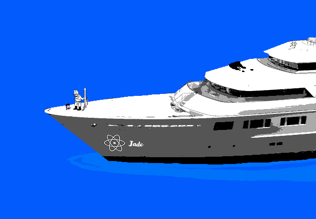
LOOK AT LITTLE JADE OH GOD. AND HE NAMED THE SHIP LIKE HER AWWWW.And yuuuuuuup. Jade’s present to John is definitely that bunny. Upgraded with nuclear gadgets?? Made into a weapon?? And it will get to John who will use it. A bunny has already been used as a weapon! In John’s first strife with an imp!! So he will get it and use the thing together with the magical power of eternal friendship, because seriously all the kids worked on that same effing bunny, to fight… most probably Jack Noir?? Because the bunny is the thing that allowed him to raise to power and kill the Queen! The bunny can be used to easily kill Jack! And what made him into what he is will also be his Achille’s heel! Checkmate, motherfucker! WOWWOW WOW I’M EXCITED NOW
A renowned billionaire explorer approaches on his yacht. An old factory lost two days prior, but a new shipmate gained. Together they settle the island and plunder its secrets.
And it looks like… Grandpa just took hold of Jade… somewhere. But Jade is definitely not adopted????? Like she is fucking identical to Grandpa. Well, in reality she is fucking identical TO NANNA. And John is fucking identical TO GRANDPA. MMMMHHHHHH. I wonder what this could possibly mean. Surely a mystery too intricate to be solved. Mmmhhh.
A meteor overhead streaks unnoticed, headed toward an unseasonably warm city in the central United States.
We swiftly move on! To Texas! To BRO!
I’m pretty sure the sky is not bloody red in Texas. Then again I have never been there, maybe it really is. Truly, one never stops learning. The world is such a fascinating place.
Bro looks so shocked and yet so composed at the same time BECAUSE HE HAS NO FACE. Why is he in fighting stance though. BRO, who are you fighting?? The meteor?? I’m sorry to say that no matter how strong you are a meteor might be too big to tackle. Also completely stupid.
He is prepared for the occasion with a small pair of outrageously awesome shades.
WHAT THE FSUCK WHAT TEW SHIT WHAT THE HELL SERIOSULY????????????????????
ARE YO SETIOUS?? ARE YOU FUCKIGN SERIOUS??????
IS DAVE??? IN THE FUCKING CRATER?? IS THAT WHAT YOU ARE TELIGN ME???????? SERIOUSLY????? I DONT’????? KIDS CAN’T SURVIVE ENTERING THE EARTH ATMOSPHERE ON A METEOR??? NOR CAN ADULTS DO IT?????? BULLSHIT. THIS IS UTTER BULLSHIT.
Why the fuck is BRO prepared for this. What did he think. Did he see those tiny shades and go “ah yes, just what i will need if a kid on board of a meteor lands any near me”. Did the guardians know beforehand. OH. I just realized a thing. Consider the fact that BRO deliberately chose to make Dave grow up thinking he was his brother, not his father. Perhaps he knew that he had no business with being a father and parenting in general, he knew he would fuck it up tremendously, but couldn’t refuse. Just food for your thoughts. :(
A meteor overhead races unnoticed, headed to a lake near a laboratory on the east coast of the United States. No aquatic life would survive.
And next is Rose’s meteor!! Like… literally Rose on board of her meteor. I don’t think there are seat belts on there. Umh. And uh, that’s a parallel with her Denizen killing every form of life in the ocean.
You create a PARADOX GHOST IMPRINT of the outrageously awesome dude. The sludge is allocated to one of another pair of tubes.
WAIT PAIRS. THEY GO IN PAIRS. No, okay I’m done I will stop thinking about anything at all for an indefinite amount of time. Goodbye. My brain has been shut down so that it doesn’t damage itself by spending too much time dealing with thIS FUCKING BULLSHIT. BUUUULLLLLSSSSHIIIIITTTTTT. BULLSHIT………………BULLSHIT.
You switch again to a view of your neighborhood, on April 13th, 1996. It is the day of your birth.
Yeah, John. What are you going to destroy. Oh WAIT. This means that Jade was the one destroying the Crocker facility. Oh my God. John, I’m afraid your throne as biggest Crocker hater as been usurped. Jade started hating on it before she even set foot on Earth. That’s dedication.
There is more real estate you do not recognize near the recently devastated baked goods facility. It is a shopping mall you have never seen before.
And that means that the shopping mall is done for.
OH MY GOD THE PRANKSTER’S GAMBIT. THEY RAN A SHOP TOGETHER.
BABY ROSE BE STILL MY HEART
A professional lady and new mother has traveled from the opposite coast at the behest of a famous and wealthy scientist to study one of numerous recent celestial anomalies while he is on expedition.
OH MY GOD OH MY GOD THE GUARDIANS ALL KNOW EACH OTHER SLAY ME THIS IS ALL I EVER WANTED AND BEYOND
She notices a meteor overhead, on collision course with a quaint family joke shop. A distinguished gentleman notices the lady and comes outside to greet her, oblivious to the threat above. The gentleman’s mother remains inside, busying herself with a tall bookshelf, a ladder, and a rather hefty unabridged joke book.
OH MY??????? NOOOO?? NOOOOPEEE??? OH MY FUCKING???? DEAR JESUS WHY???
AAAAAAAAAAAAAAAAHHHHHHHHHHHHHHHHH THT’S NOT OKAT THIS IS NOT OAKY NO OAKTY NOT OKAY OH JESUS DAMMIT JOHN KILLED HIS GRANDMA DEAR GOD
The gentleman discovers a clue. A powerful nose detects perfume. The lady has fled. The mystery deepens.
Dear Dad Egbert,
……………YOUR MOTHER JUST FUCKING DIED UNDER YOUR VERY EYES STOP BEING A CREEP AND GET A GRIP. AND BY GET A GRIP I MEAN CRY AND PROBABLY WONDER WHY THE HELL THERE IS A KID IN THE CRATER LEFT BY THAT GODFORSAKEN METEOR. That said, I’m truly sorry for your loss.
Seriously though, I understand that Rose’s MOM has quite the booty but SERIOUSLY. Shouldn’t you be… mourning…? Under shock??? I??? Give up????
“Excuse me, precious daughter of mine, I will just put you down a moment on this soft grass, I have to go stand near the hill and look outrageously badass and mysterious while surveying the situation from afar.”
Also. MOM is a teleporting wizard ninja. CONFIRMED. How the fuck did she get so far so fast. See, MOM is the Earth counterpart of Snowman, screw the Black Queen, it was obviously Miss Lalonde all along.
You create a PARADOX GHOST IMPRINT of the professional lady. The sludge fills the final tube.
Once all the tubes are filled, an automated sequence begins to execute.
OH GOD WE ARE CLONING THE KIDS. IN PAIRS. ONE FEMALE AND ONE MALE. JOHN AND JADE ARE NOT COUSINS THEY AREEEEEEEEEEE HEEEEEEEEEEEEEEEEEEEYYYYYYYYYYY WAIT ROSE???? DAVE??????????? MOM????? BRO I??? WHAT??????????? I CAN’T. STOP THIS. I DO NOT WANT TO COME TO THIS CONCLUSION. BRING THIS CONCLUSION AWAY. LOCK IT IN A SAFE. THROW THE SAFE IN THE OCEAN. LET A WHALE SWALLOW IT. BRING IT AWAY. FROM ME. AWAY.
……………………………………………………………………………………what.
what ????????????? excuse me?????????? i can’t seem to put this image into focus. because those don’t look like the kids???? there must be a mistake surely egbert is at it again and fucking things up
why???????????? are the guardians???????
Four young PARADOX CLONES are created.
PARADOX CLONES THEY ARE CLONES OF THEMSELVES THAT WILL BE SENT BACK IN TIME I CANNOT BELIEVE
THEY WERE NEVER REALLY BORN????????????? THEY JUST????? POPPED INTO EXISTENCE???? BUT AS OF NOW THEY ALREADY EXIST. THIS IS THE STUPIDEST TIME LOOP EVER CREATED. THIS IS THE STUPIDEST THING I HAVE EVER SEEN. ALSO THEY KIND OF ARE ALIENS. DO THEY HAVE A BELLY BUTTON. I DON’T THINK THEY DO.
LOOK AT THAT ECHELADDER. THOSE TITLES ARE RIDICULOUS. MR. SNOOZYPRINCE MCSLEEPYPANTS. THIS IS WHAT JADE ANGRILY WHISPERS TO ASLEEP JOHN WHEN SHE VISITS HIM ON PROSPIT
OH GOD NANNA OH GOD. IT IS ILLEGAL TO BE THAT CUTE. STOP IT. WHAT IS BRO DOING. JOHN, HELP THE POOR KID. HE IS LIKE A TURTLE ONCE HE ENDS UP ON HIS BACK HE CAN’T MOVE
DAVE IS ALREADY HIS ATTENTION SEEKING SELF WOULD YOU LOOK AT THAT
You storm up your ECHELADDER to claim the coveted if difficult to pronounce rung: ECTOBIOLOBABYSITTER.
Your ladder is absolutely hemorrhaging the boondollars. Just what your porkhollow’s fat ass needs.
You surpass ONE MILLION BOONDOLLARS and trade them all in for a single whopping BOONBUCK. This is of course going directly into the college fund for these youngsters.
Sure is heavy. Into the hollow it goes.
Rest in fucking pieces, Mr. Porkhollow.
An old man has much to do before he returns to Earth, dies, gets stuffed by his adopted-yet-biological daughter-slash-grand-daughter, and stuck in front of a fireplace.
Taking priority at the moment is shipping two passengers long overdue for a reunion.
shipping two passengers
shipping
Grandpa, I did not know you had it in you for this kind of things. It’s MOM and DAD isn’t it?? ;) ;) ;) Oh, would you look at that, I can’t stop winking. Dang, there must be something in my eye. My eyebrows are also…. raising?? Oh, gosh, what could be happening???
Wait. They are standing on a ship. Grandpa ships them. The ship is sailing.
AFTER THIRTEEN FREAKING YEARS. Are you serious. He still had the scarf. In his wallet. What did he do, take a sniff every once in a while?? WAIT CREEEEEEEPY
I swear she looks like a mantis. And now that I think about it….what does the female mantis do to the male… after….. you know….. OH GOD DAD RUN. As fast as your fatherly legs can carry you!!!
You know why I am kinda angry?? Well, of course besides the whole Ectobiology bullshit. How in hell did I never consider the possibility of two characters named MOM and DAD ending up together?? Seriously.
And it was love at first sniff sight. And I now kind of have this headcanon in which ships can only sail in Homestuck if the directly interested are on a literal ship. Otherwise there will be ship tease and stuff but only on THE SHIP will they get together officially. …….We’re gonna need lots and lots of ships then.
OH GOD
NANNA. Your grandson is not your personal playground.
Jade, honey, stand by, your Big Paradox Bro is kind of busy right now.
SOMEBODY SAVE BRO HE IS GOING TO GET HIMSELF KILLED
WHAT IS GRANDPA EVEN DOING WHAT DID THAT PLATFORM EVER DO TO YOU STOP
ROSE AND MOM STOP………. WAIT. DON’T STOP. KEEP DOING…. WHATEVER YOU ARE DOING. T-THAT’S ADORABLE.
MUTIE IS GIVING JOHN A TUMMY MASSAGE TO CALM HIM DOWN. I’M SORRY, ROSE. JOHN WAS MUTIE’S OWNER ALL ALONG. THE KITTY HAS CHOSEN.
DAVE STOP CLIMBING TO THINGS
OH MY GOD. IMAGINE BRO HAVING TO DEAL WITH THIS.
With Dave constantly clinging to things and climbing. Like he would call the pediatrician and wonder why the hell the kid is acting like this and the poor pediatrician would go “Mr. Strider, at this age kids are supposed to start exploring and look around themselves. It’s perfectly normal.” And BRO, mumbling "yeah explore this puppet ass next time" “I’m sorry, I didn’t catch that?” “i mean. yeah i think next time i will just let him fall on his butt and learn a lesson. isn’t that what kids are supposed to do. learn by themselves.” “I… don’t think your son would-” “yoooo calm yo tits i ain’t nobody’s father and he sure ain’t my son” “Oh. I had forgotten. By the way I remember asking you to let me talk with his parents to no avail. Is there any chance you can let me hear from them anytime soon?” “i already did. last time. how many times do you gotta talk to them.” “…Let’s just say that your Miss Strider’s impression did not convince us and it would be better if we could talk to them in pers-” “dead” “E-excuse me?!” “they kicked the bucket. walked the plank. entered the sweet hereafter. pushing up daisies. got ran over by a bus. completely flattened. you could see their guts spilling-” “I’m very sorry for your loss! But I think I have enough details as it is!!” “shit was very traumatizing” “Mr. Strider, I do not mean to pressure you, but we are just concerned about the baby’s wellbeing. I am afraid we will have to contact authorithies-” Bro hungs up. He sinks into the couch, stroking his chin, gaze searching for Dave. "well, lil' bro, it seems we will have to move agAIN DAVE STRIDER GET OFF THE FUCKING FRIDGE FOR THE LAST FUCKING TIME I AIN’T RAISING NO MONKEYS YOU SNEAKY SON OF A BITCH-“ The phone rings again. Bro picks it up. Miss Lalonde’s voice shrills through: "heard u were talkin shit”. And even through the phone, he can feel the death glare. How does she keep doing this?! Bro may never know.
………………………#StopMeFromWritingFanfictions2k15
And now I headcanon Bro as completely socially inappropriate. And well, Mom is a badass, but that isn’t a headcanon, it’s a mathematical certainty. Where did you think Rose took it from.
CG: SEE THIS IS A CASE IN POINT. EB: what point? CG: THE POINT I WAS JUST MAKING.
Don’t ya worry, he was probably just talking about how ridiculous you are.
CG: ABOUT THE ULTIMATE RIDDLE.
WAIT. FUCK. Next conversation?? We will be talking about the Ultimate Riddle??
CG: YOU BLITHERING FECULENT SHITHOLE. CG: OK THAT’S YOUR CUE TO LAUGH AT ME SOME MORE I GUESS. CG: BECAUSE YOU SEEM TO REALLY GET OFF WHENEVER I FLAME YOU. CG: HUMANS ARE DERANGED.
Aww, noooo. CG, you misunderstood! John likes you! And yes, he is deranged. Everybody is. I kind of pity the guy though. Nobody even takes him seriously. John laughs at his face, GC laughs at his face, that aneurysm I was talking about really is nearing.
EB: oh man, i must be getting closer to the conversations where you’re trolling me harder! EB: this is pretty exciting, i can’t wait to see what you’ve got up your sleeve. CG: YOU SEE WHAT I MEAN??? FUCK YOU ABOUT THAT.
God, John. You really aren’t helping. A sample from John and CG first conversation. An early scoop only for you readers:
CG: WHAT THE FUCK DID YOU JUST FUCKING SAY ABOUT ME, YOU LITTLE BITCH? I’LL HAVE YOU KNOW I GRADUATED TOP OF MY CLASS IN THE NAVY SEALS, AND I’VE BEEN INVOLVED IN NUMEROUS SECRET RAIDS ON AL-QUAEDA, AND I HAVE OVER 300 CONFIRMED KILLS. I AM TRAINED IN GORILLA WARFARE AND I’M THE TOP SNIPER IN THE ENTIRE US ARMED FORCES. YOU ARE NOTHING TO ME BUT JUST ANOTHER TARGET. I WILL WIPE YOU THE FUCK OUT WITH PRECISION THE LIKES OF WHICH HAS NEVER BEEN SEEN BEFORE ON THIS EARTH, MARK MY FUCKING WORDS. YOU THINK YOU CAN GET AWAY WITH SAYING THAT SHIT TO ME OVER THE INTERNET? THINK AGAIN, FUCKER. AS WE SPEAK I AM CONTACTING MY SECRET NETWORK OF SPIES ACROSS THE USA AND YOUR IP IS BEING TRACED RIGHT NOW SO YOU BETTER PREPARE FOR THE STORM, MAGGOT. THE STORM THAT WIPES OUT THE PATHETIC LITTLE THING YOU CALL YOUR LIFE. YOU’RE FUCKING DEAD, KID. I CAN BE ANYWHERE, ANYTIME, AND I CAN KILL YOU IN OVER SEVEN HUNDRED WAYS, AND THAT’S JUST WITH MY BARE HANDS. NOT ONLY AM I EXTENSIVELY TRAINED IN UNARMED COMBAT, BUT I HAVE ACCESS TO THE ENTIRE ARSENAL OF THE UNITED STATES MARINE CORPS AND I WILL USE IT TO ITS FULL EXTENT TO WIPE YOUR MISERABLE ASS OFF THE FACE OF THE CONTINENT, YOU LITTLE SHIT. IF ONLY YOU COULD HAVE KNOWN WHAT UNHOLY RETRIBUTION YOUR LITTLE “CLEVER” COMMENT WAS ABOUT TO BRING DOWN UPON YOU, MAYBE YOU WOULD HAVE HELD YOUR FUCKING TONGUE. BUT YOU COULDN’T, YOU DIDN’T, AND NOW YOU’RE PAYING THE PRICE, YOU GODDAMN IDIOT. I WILL SHIT FURY ALL OVER YOU AND YOU WILL DROWN IN IT. YOU’RE FUCKING DEAD, KIDDO.
EB: you’re trained in “gorilla” warfare? is that when you beat someone to death with a banana? it’s spelled guerilla you fucking moron.
Yes, this is exactly how it went down. Definitely.
EB: anyway, you weren’t making a point about the ultimate riddle, dude. CG: YES I WAS, AND NOW I’M LOSING MY TRAIN OF THOUGHT DIPSHIT. EB: nope, we never talked about it. EB: yet… CG: OH HELL, THAT’S RIGHT. CG: DAMMIT, I GUESS THIS IS GOING TO BE CONFUSING. EB: oh, you’re just starting to figure that out now? CG: SEE I KIND OF PAINTED MYSELF INTO A CORNER. CG: I STARTED TROLLING YOU AT THE END, JUST BEFORE THE RIFT.
WAIT WAIT WAAAIT. THE RIFT?? Or is it The Rift?? This is important, there is a difference, CG. Your typing style is withholding crucial information from us.
CG: AND THEN JUMPED BACK A LITTLE. CG: AND NOW I GUESS I’VE BECOME RAILROADED INTO WORKING BACKWARDS HERE. CG: UNLESS I WANT TO DO THE SORT OF DUMB SCHIZOPHRENIC HOPPING AROUND LIKE THE OTHERS. EB: oh my god, i know, you’ve already told me like a million times!!! CG: I HAVE? CG: WOW I CAN’T WAIT FOR ALL THESE AMAZING CONVERSATIONS TO TAKE PLACE. CG: IT’S GOING TO BE LIKE THAT HUMAN VACATION WITH THE GIANT RED CHIMNEY ASSHOLE UP IN HERE. CG: YOU KNOW, THE ONE WHERE A BUNCH OF MOANY NOOKSUCKERS SING AT A LITTLE PINE TREE I THINK.
I feel like CG marathoned dozens of bad human flicks after starting to contact our kids, maybe to think up a better trolling strategy, and things got confusing in his little head. CG, you just ruined Christmas for us all. And I just wanted to say in his defense (yeah, I know, me defending CG??? MADNESS.) that he probably didn’t want to troll backward. He contacted John for the first time and John told him that it was what the troll had been doing until then. And then CG bitched about it for five paragraphs. And John closed the chat window.
EB: man, i’ve got to say i’m a little disappointed by this “masterful trolling” you were bragging about. CG: I WAS BRAGGING? CG: WHY WOULD I BOTHER WITH THAT SORT OF PEDANTIC HUMAN HORSESHIT. CG: MAYBE YOU SHOULD CONSIDER THAT I WAS BRAGGING TO GET YOUR HOPES UP IN THE FUTURE. CG: ONLY TO LET YOU DOWN. CG: AND THUS TROLL YOU MASTERFULLY IN THAT RESPECT.
That would be pretty fucking
EB: maybe, but that would be pretty weak too!!!
Yeah, thank you, John.
CG: YOUR BRITTLE HUMAN CALCIUM BASED SKULL IS WHAT IS WEAK, AND IF YOU AND I WERE IN THE PROXIMITY OF A BLUNT INSTRUMENT I WOULDN’T HAVE MUCH TROUBLE PROVING IT. EB: w/e.
No, John, no w/e. See, you’ve gotta react more strongly to death threats and stuff. He just told you he would gladly hit your head with a hammer!!!!!! He doesn’t mean it… but still.
EB: so what was the “case in point” you were making, anyway? CG: I WAS SCROLLING BACK AND NOTICED YOU WERE IN THE VEIL. EB: whoa, i am? CG: YEAH DUMBDUMB, YOU’RE TUMBLING AROUND ON A BIG GODDAMN METEOR. CG: AND YOU JUST CREATED YOUNGER VERSIONS OF YOURSELVES AND YOUR GUARDIANS. CG: PROBABLY BY MUCKING AROUND WITH THAT THING LIKE A DOOFUS.
YEAH DUMBDUMB, YOU’RE TUMBLING AROUND ON A BIG GODDAMN METEOR.
YEAH DUMBDUMB
DUMBDUMB
I swear to God, CG’s insults are starting to sound way less like insults and way more like affectionate nicknames?? Come here, you dumbdumb, you goofy nerd, you. Oh, dear. It seems the boy is growing very fond of our John, isn’t he?? ;) Oh, boy. There I go with the winking again. It is so inappropriate!! Wait. I completely lost track of my eyebrows. They are … floating from above…. to freaking Skaia they go…… Dang. Lost forever.
EB: wait… EB: these are baby versions of us? CG: HAHAHAHAHAHA, SO CLUELESS. CG: WHAT DID YOU THINK YOU WERE DOING THERE ANYWAY.
I TOLD YOU HE WAS FUCKING HITTING BUTTONS AT RANDOM. THE BLUE ONE WENT FIRST BECAUSE IT WAS IS FAVORITE COLOUR, PROBABLY. JOHN, YOU ARE A DISGRACE TO THE FIELD OF ECTOBIOLOGY. OR SHOULD I SAY: YOUR3 4 TOT4L D1SGR4C3 TO TH3 F13LD OF 3CTOB1OLOGY .
There, better.
EB: well… EB: i saw footage of my nanna, and some other people who i am pretty sure were like jade’s grandpa and rose’s mom and stuff from a long time ago. EB: and then… EB: there were all these little guys scurrying around. EB: so they are like cloned copies of us? CG: NO. CG: THEY ARE LITERALLY YOU AND YOUR GUARDIANS. CG: PARADOX CLONES. EB: huh? EB: what do you mean they are literally us? EB: do they go back in time? CG: YEAH, OBVIOUSLY. GREAT GUESS BRAIN HERO. CG: BUT TECHNICALLY THEY AREN’T EVEN SENT BACK IN TIME BECAUSE WITH RESPECT TO THE MEDIUM YOUR UNIVERSE’S TIMELINE IS MEANINGLESS. CG: SERIOUSLY WHY WOULD IT GIVE A CRAP ABOUT EARTH’S PAST OR FUTURE OR WHATEVER, FROM IT’S PERSPECTIVE IT’S JUST A BUNCH OF POINTS TO CHOOSE FROM. CG: JUST LIKE YOUR CHRONOLOGY IS FROM OUR PERSPECTIVE. CG: BUT I GUESS THAT’S A BUNCH OF SEMANTICS. WITH RESPECT TO YOUR PERSONAL CHRONOLOGY YEAH THEY GO BACK IN TIME. CG: A PARADOX CLONE IS BY DEFINITION A CORRECTLY CLONED DUPLICATE THAT WILL INEVITABLY GO BACK IN TIME AND BECOME THE ORIGINAL TARGET THAT WAS CLONED. CG: IF IT’S A MALFORMED CLONE, IT’S JUST A MEANINGLESS MUTANT THAT HAS NO BEARING ON THE STABLE LOOP CONTINUUM. CG: I DON’T SEE ANY TENTACLES OR EXTRA EYEBALLS OR WARPED BONE BULGES, SO THOSE GROSS LITTLE THINGS THERE ARE ALL YOU GUYS, WAITING TO GO TO EARTH AND GROW UP AND BECOME THE INSIPID BUNCH OF GRUBFISTED DOUCHEBAGS YOU ALL ARE NOW. CG: AND THIS WAS THE POINT I WAS TRYING TO MAKE ABOUT THE ULTIMATE RIDDLE.
Okay, first of all, I take back everything I just said about him getting fond of John and the humans. Second, what does the Ultimate Riddle have to do with Ectobiology???
EB: what is the riddle anyway? EB: maybe i can guess, i am good at riddles!
Oh, YEAH!!!! Oh, gosh, how come we never thought about this!!!! The solution was under our very eyes all along!!!! Just let John solve it!! He is good at riddles!!! Haha, I’m so glad we have sorted this out really!!! I will just go bang my head against this nearby wall now!!! Out of joy, of course!!! BRB.
CG: HAHAHA, THINK AGAIN IGNORAMUS. CG: IT’S NOT EVEN THAT GREAT. CG: OR EVEN MUCH OF A RIDDLE AT ALL. CG: IN THE COURSE OF YOUR ADVENTURE YOU WOULD HAVE ENCOUNTERED ALL THESE FRAGMENTS OF LIKE WEIRD POEMS AND SHIT. CG: YOU FIND THEM ALONG YOUR QUESTS, WITH CLUES AND STUFF BURIED IN THEM TO HELP YOU SOLVE PUZZLES AND MOVE HUGE STONE COLUMNS AND MAKE STAIRCASES APPEAR AND LOTS OF NONSENSE LIKE THAT. CG: AND IT’S ALL MASKED IN THIS FLOWERY SORT OF FROTHY POETIC JACKASSERY THAT NOBODY REALLY CARES ABOUT.
THERE ARE PUZZLES ON THE LANDS SIGN ME THE FUCK UP
CG: BUT WHAT ALL THESE LOFTY SYMBOLIC ALLUSIONS BOIL DOWN TO IS SOME GRANDER STATEMENT ABOUT WHAT YOU SEE HAPPENING HERE. CG: THAT YOU WERE ALWAYS THE KEY TO SEEDING YOUR OWN EXISTENCE THROUGH THIS GAME. CG: AND ANY HOPE THAT IT COULD HAVE PLAYED OUT DIFFERENTLY OR THAT YOU COULD HAVE AVOIDED THIS WHOLE MESS WAS ALWAYS JUST A RUSE. EB: a distaction, perhaps? CG: WHAT? EB: nevermind.
I CANNOT BREATHE HELP
Oh, godness. CG is practically explaining the meaning of this whole game and all John is thinking about is how to slip in some memes I CAN’T BELIEVE HIM. He is unreal. He is intangible to the touch. He cannot actually be a person existing.
CG: BECAUSE IF IT DIDN’T GO DOWN THIS WAY THEN HOW WERE YOU EVEN BORN, GET IT. CG: WHICH IS ESPECIALLY PATHETIC SINCE PARADOX SPACE APPARENTLY WENT TO ALL THIS TROUBLE TO MAKE YOU JUST TO HAVE YOU FAIL AND DIE. CG: REALLY THERE’S NOTHING MORE TRAGIC THAN THESE NULL SESSIONS FULL OF KIDS ENTERING THE GAME AND FULFILLING SOME COSMIC DESTINY SHIT JUST TO GET WIPED OUT AND LEAVE BEHIND AN EMPTY POINTLESS INCIPISPHERE FOR ALL ETERNITY. CG: ACTUALLY IT’S SORT OF HILARIOUS. CG: OR IT WOULD BE IF IT DIDN’T AFFECT ME PERSONALLY. CG: BUT ANYWAY, THERE’S A LOT MORE TO THE RIDDLE THAN JUST THAT, LIKE WHAT WE WERE JUST TALKING ABOUT LAST TIME WE TALKED. CG: BUT THAT’S SORT OF THE GIST OF THE THEMES IT DEALS WITH.
So??? That’s it??? The Infamous Ultimate Riddle??? Destiny bullshit and whatnot??? Well, lemme tell you a thing, CG. You’ve got it all wrong. Not only because it is implied in this very pesterlog; disclosing the meaning of The Ultimate riddle in a conversation early on?? Excuse you, but this is End Game material. But also because the “everything has already been established by destiny bluh bluh bluh” mentality is the crappiest thing ever if you ask me. And if there is a thing I get worked up on is Destiny bullshit debates. I’m like… an expert. So I’ll share my Destiny Bullshit view with you. Destiny is not a thing, I mean… it is, but in the way most people think. Destiny is written but the reality is that you are the one writing it!! So putting it in context with Sburb, the game does give you a path to follow, but you are the one shaping it!! With your own will!! FREE WILL!! So yeah, CG. Take your “everything has already been chosen for you” little talk and go back to your pretty Troll Planet.
EB: ok. EB: well, if i run into some salamanders who tell me all about this riddle and get really excited about it, i will try to act surprised. EB: so this is the same kind of thing you went through? EB: with, like, being your own paradox clones and creating your own parents and stuff? CG: YEAH. EB: how did that even work, with 12 of you? CG: IT WAS REALLY FUCKING COMPLICATED AND I’M NOT GOING TO GET INTO IT. CG: OUR FAMILY STRUCTURES ARE ALREADY WAY MORE COMPLICATED THAN YOURS WITHOUT EVEN GETTING SPOOKY TIME SLIME INVOLVED. CG: BASICALLY WE HAVE NOTHING IN COMMON WHATSOEVER. CG: EXCEPT MAYBE THIS… CG: I WAS THE GUY IN YOUR POSITION, TO MAKE ALL THESE CLONES, AND FRANKLY IT ALL KIND OF FREAKED ME THE HELL OUT.
TWENTY-FOUR. I’M JUST GOING TO SAY. TWENTY-FOUR. That’s the number of trolls he created.
Wait. Dang. The trolls will also be related! And they are twelve! I was already lucky with the kids, but this time I will definitely end up shipping incest. Relationships that won’t be revealed till CG does ectobiology. No, okay. Alright. I’m warning you guys, if something I ship, I mean really ship, not like hey they are cute, I won’t give a shit if they’re related. Deal with it. Seriously, as long as they didn’t grow up in the same house it is completely shippable for my standards. Rose and Dave flirted like hell! Wait. Rose and Dave flirted like hell. How are they going to react. Oh, deary, deary me.
EB: huh… EB: yeah, i guess now that you mention it, i am finding it all a little strange… CG: OH, ONLY JUST NOW??? CG: FUCK YOU ARE FAST, I HOPE YOU GOT THE MAD BOONBUCKS TO PAY OFF THOSE SPEEDING TICKETS.
PFFFTAHAHAHAAH OH MY GOD HELP ME I’M GONNA VRY
He may be an asshole, but he is an hilarious one at that. You gotta admit it.
EB: no, no, i mean the ghost stuff and paradoxes are one thing of course… EB: it’s something else. EB: it’s just… EB: this is really weird… CG: WHAT’S SO WEIRD ABOUT IT. EB: well, normally humans hatch… EB: from like these slimy pods. EB: then we wriggle out as a little pink larva. CG: OH REALLY. CG: HUH, MAYBE WE HAVE MORE IN COMMON THAN I THOUGHT. EB: (hehehehehehehe)
JOHN
EB: and then after that you can keep going backwards and then make fun of me riding my little red rocket. EB: you can tell me i look like a silly little paradox clone fresh out of my slime tube and this is just all a big nurseytime recess jamboree. EB: that would burn me good! CG: OK THAT IS PRETTY GOOD. CG: BUT I CAN’T USE IT, BECAUSE YOU SAID IT, AND THEN LATER, I.E. RIGHT NOW, YOU WOULD GET THE SATISFACTION OF KNOWING YOU WERE THE ONE TO COME UP WITH THAT BURN. CG: SEE, YOU ARE DEALING WITH A PRO, YOU CAN’T OUT TROLL ME SO JUST FORGET ABOUT IT AND STOP TRYING. EB: (hehehehehehehehehehehe)
JOHN STOP TYPING LAUGHTER AT THE END OF YOUR TROLLING ATTEMPTS ARE YOU SERIOUS?!?!?? Meanwhile CG is making such a fool out of himself, dear godness.
John and Nanna are up to silly prankster shenanigans. By the way, if everyone gets on Earth through meteor, as ridiculous as it may be, who raised the guardians?? I mean, the kids were adopted by the guardians, that were crazy enough to just take a baby fallen on a meteor and bring it home, but the guardians themselves?? Did a bunch of stray dogs find them and took care of them all. I’m afraid that only works with Miss Jade Harley.
OH
OH GOD
DON’T
BRO DON’T CUDDLE THAT PUPPET
IT’S ADORABLE BUT
JUST NO
WAIT. OH MY. I figured it out guys!!! In reality, BRO’s guardian is Lil'Cal!! CAL, see?? It even fits the three letters pattern!! That’s why BRO is so messed up. And why he and Cal share such a strong bond. Cal was always there for Bro in times of need. Whenever you wanted to chat it up, you always knew where to find it! ….Usually… exactly where you left it last time…. Umh.
A typical situation with a young BRO:
BRO: I really don’t know what do, cal! those bunch of assholes bullies won’t leave me alone at school!!
CAL: let me take care of it
BRO: really?? you’re the best, cal!!
ONE MONTH LATER
BRO: you know, I haven’t seen those jerks around in ages! not that I’m complaining, but they just disappeared! It’s so weird!
CAL: very weird indeed. I wonder what could have happened to those corpses
BRO: wait. c-corpses?!? they didn’t say anything about them being dead!
CAL: oh do not concern yourself with these trivialities, keep eating your breakfast, it is the first step for an healthy diet
PLOT TWIST!!! Cal actually cares a whole lot about Bro, so when Dave entered the happy family, the puppet felt endangered and its attentions divided between it and new lil’ bro. And that’s why Cal could never accept him and to these days keeps haunting his ass. Wow! That sure is a mystery I just solved!
GRANDPA OH GOD
Okay, John. Let’s approach him… very slowly….. don’t scare him…. if he starts flailing you’re all done for….
GRANDPA STOP POINTING THOSE TO YOUR ADOPTED GRANDDAUGHTER/BIOLOGICAL DAUGHTER
Look, Dave is jealous of all the attention Jade is getting. I’m sorry, kiddo, Jade as the cutest baby in the Incipisphere gets cuddling privileges first. You can come back later.
OH MY GOD. Look! CG is so outraged that his symbol just randomly became red. Red as the burning rage he feels… And red as the color his face will get when all the blood rushes to his horned skull and he gets the inevitable Ictus we are all anticipating. If you can even call them horns. I mean… they kinda pale in comparison with AT’s. I wonder if they are a symbol of virility?? And like, since CG’s horns are practically nonexistent he makes it up by screaming and being brash?? To prove his masculinity or something?? And then he openly proclaims his love for Serendipity. Yeah, sorry, not working. And by the way, I don’t *think* blood rushing to the brain is how Ictus work… Wasn’t it the opposite? Like blood not reaching the brain? And consequently no oxygen? Should I research this? Oh, come on. Have you seen some of the bullshit I write on this liveblog?! Surely you weren’t expecting medical accuracy??
CG: OK IT’S A FEW MINUTES LATER. CG: LOOK HOW SANE AND LINEAR WE ARE BEING. EB: yeah! CG: OK AWESOME, NOW FUCK YOU AND GOODBYE. EB: wait! CG: WHAT. EB: i was just looking at all these rascals, and i was wondering… EB: how they go back in time and become us and stuff. EB: does it have something to do with the reckoning? CG: HOW DO YOU KNOW ABOUT THAT. EB: you told me. EB: we had this great dare going. EB: to see who could be the least helpful and informative. EB: and you totally lost, dude! EB: you were hella helpful. CG: I WAS OBVIOUSLY JUST SPITING YOUR STUPID POINTLESS HUMAN DARE. CG: WHAT IS A DARE ANYWAY, IT’S NOTHING. CG: SOMEONE SAYS DO SOMETHING AND THEN, OH LAUGH LAUGH, YOU LOSE IF YOU DON’T DO IT. CG: THAT ISN’T ANYTHING THAT DESERVES A WORD. CG: WE DON’T EVEN HAVE A WORD FOR DARE IN OUR LANGUAGE.
I have a feeling CG is just butthurt because he lost tons of dares on his troll planet. They probably dared him not to rant for a whole day. And then began to do all sort of ridiculous things under his very eyes. And he had to suppress the screams. Until a troll ambulance had to bring him to troll hospital.
CG: THE CLOSEST APPROXIMATION WOULD BE “WORTHLESS FUCKING BULLSHIT WASTE OF TIME FOR SILLY LITTLE CHILDREN" EB: oh, wow. EB: is that the title of a movie too?
OOOH BURN!!!!
CG: YES, IT’S THE TITLE OF EVERY DUMB MOVIE YOU EVER LIKED.
OOOOOH BUUUUURNN!!!!!
EB: ha ha, that isn’t even true and doesn’t make sense!
Shut up, John. Learn to recognize a burn when you get one! Apply cold water and some bandages and call it a day. Did your father teach you nothing?!
CG: YOU HAVE SOUNDING STUPID DOWN TO SUCH A SCIENCE. CG: WHERE IS YOUR LAB COAT AND TEST TUBES DOCTOR BRAIN PROFESSOR? EB: i am wearing a lab coat! EB: sort of… CG: YOU LOOK LIKE AN ELF. EB: that’s bullshit!
NO, THAT’S TRUE. HE IS RIGHT. He only lacks the pointy ears. The height is there.
CG: YOU ASKED ABOUT THE RECKONING, SO WHY DON’T WE TALK ABOUT THAT INSTEAD OF ALL THESE PRETTY MUCH TERRIBLE THINGS. EB: ok. CG: YEAH, SO WHEN THE RECKONING STARTS HAPPENING, ALL THESE PARADOX CLONES GET SHIPPED OFF TO METEORS, FLUNG THROUGH SKAIAN DEFENSE PORTALS, AND SENT BACK TO EARTH. CG: END OF STORY I GUESS. CG: BYE. EB: wait!!! EB: so that means… EB: we are all sort of like superman? CG: UH YEAH, I GUESS. EB: cool! CG: YOU ALL TRACE THE MYTHOLOGICAL FOOTSTEPS OF YOUR BELOVED HUMAN SUPERMAN WHO’S REALLY JUST A MUSCULAR CAUCASIAN ALIEN. CG: IT’S HILARIOUS HOW HUMANS WORSHIP HIM AS A PINNACLE OF HUMAN HEROISM AND VIRTUE BUT HE ISN’T EVEN HUMAN. CG: ACTUALLY IT’S INCREDIBLY PATHETIC. CG: BUT ALSO IN A WAY KIND OF ADMIRABLE. CG: BECAUSE IT MEANS DEEP DOWN YOU ALL MUST REALIZE WHO YOUR DADDY IS. CG: WE ARE, BITCHES.
You know you are in too deep, when your first thought after reading this… was wondering if all the trolls secretly have a daddy kink.
EB: yeah, superman is pretty cool, i guess. EB: did you know nicolas cage was almost going to play superman one time?
WHAT THE FUCK
DOES IT EVEN
JOHN WHO GIVES A FLYING FUCK
ABOUT YOU OR NICOLAS CAGE
WHERE DID THIS EVEN COME FROM
WHAT IS YOUR BRAIN JOHN
CG: OH MY THROBBING PHLEGM LOBE, WHO GIVES A BARFING FUCK ABOUT THAT. CG: JOHN EGBERT, YOU HAVE ASSASSINATED MY PATIENCE. CG: ADIOS LOSER.
aDIOS LOSER HELP I CAN’T BRWATH IM GOING TO DOE THEY ARE GETTONG MULTICULTURAL RUN
EB: wait!!!!!!!!!!!!!!!!! EB: get back to me in a couple minutes, ok? CG: SD;LKFJSD;LKFJSDLFKJ; CG: FINE.
I believe he just smashed his head on the keyboard repeatedly. That must have hurt.
What is a frog temple doing in The Veil. And yeah, you can really see the seven gates on this one. I’m still upset about Skaia not turning out to be a huge swampland, by the way.
You are ripping up so many hellaceous shreds this fierceshitty biznasty is getting so deliriously rudebrazen it…
Ok you lost the handle on that sentence.
Don’t ya worry, one can only be cool for so long. *glances at Dave* You can only. Be cool. For so long. Heard that? GIVE. IT. UP
This thing is so completely illegal.
How could this atrocity be floating out here unnoticed all this time?
You are going to throw whoever is responsible into the slammer.
You always call jail the slammer when you are extra angry at crimes.
I nominate AR as dorkiest Homestuck character. John can make out with all the posters he wants but HAVE YOU SEEN THIS GUY?? He takes himself so seriously and then he:
calls the jail slammer when he is extra angry at crimes.
almost sets his hat on fire upon greeting a fine carapacian
surrenders to a pumpkin that vaguely looked like becquerel
organizes military defenses of can town
steals bros rocket board to make ill hoops
???? It’s incredible???
Other incisions. There are frogs, turtles… crocodiles??
There is… a hat… that I recognize on that screen.
There is a large monitor. Displayed on it is a small human girl in a fancy house. The date is April 21, 1910.
OH CHRIST IT’S NANNA AGAIN.
CUTE AS A BUTTON AAAH. I WON’T SURVIVE THIS.
Is that. Is that freaking Colonel Sassacre. I. Seriously I give up this time.
Eight days prior, the orphan girl was taken in by an aristocratic southern colonel and legendary humorist. He recovered the young lady from a crater where a bakery once stood,
It seems Nanna also hated Betty Crocker. Practically the only one in the Egbert/Harley family that did not get to destroy a Crocker property is, ironically enough, John. What a shame.
operated by the man’s wife, a notable baked goods baroness.
WAIT
WAUT
THE FICK
WOFEEEE??? WIFE???? BETTY CROCKER???? RAISED NANNA???? TOGETHER WOTH SASSACRE???? BETTY CROCJER IS JOHNS GRANDMOTHER?!,!???????
Can I just say. One thing. That Nanna is the only one so far that had an appropriate reaction to a meteor falling. Or what very likely is meteor falling. Kudos to Nanna. She is the only little crumb of realism I can hold onto as of now.
MEANWHILE. Colonel Sassacre goes: Blimey!! That sure is a meteor that just fell!! Let me assume an appropriate shocked stance!! *spreads legs* This shall do the trick!!
WHO IS THE MOTHERFUCKER THAT JUST LANDED AND KILLED A POOR INNOCENT DOG
The colonel and his new grand daughter investigate.
The impact site is where a dog house stood moments ago. It was the magnificent abode of the man’s beloved pet, HALLEY.
He takes a belt from the old julep flask. He’d sooner perish himself than lose that dear animal.
I feel you, Colonel. Nobody wants to outlive their pets.
People would think reports of the man’s death were greatly exaggerated.
But they weren’t.
AND IN FACT HE WON’T DO IT
WHAY THE FUCK
WHAT THE ACTIAL FUCK
WHAT THE ACTUAL
This is exactly why babies should not be allowed to dual-wield flintlock pistols.
AAAAHHHH GRANDPAAAAAA. You killed both your guardian and his dog! Now who will raise you two silly pranksters!!! ….Wait, the baroness. Of course.
An old colonel lost, but a new brother gained.
This is. The most ridiculous thing. Nanna is just completely delighted by her guardian’s death. Sassacre is just. Laying. In a pool of his own blood. While Grandpa just climbed the crater. And now he and Nanna are partying hard. They have the house all for themselves. Imagine Betty Crocker coming home to this. Wait, she was probably charged with murder of her husband. The police wouldn’t really suspect the kiddies. But actually if we want to attempt something crazy and try to be logical while reading this bullshit, there should be thousands of tiny little grandpa’s fingerprints on the pistol…. UNLESS. Human beings created through Ectobiology do not have fingerprints!! DUN DUN DUN DUUUUN!!!! The mystery deepens.
WAIT HALLEY IS ALIVE
Ah ha! There’s HALLEY. The youngsters adore their new guardian. Good dog. Best friend.
May I remind you that Colonel Sassacre’s body is still laying on the ground less than one feet away. His fingers are probably still twitching……. FOR THE GUN. He shall have his revenge!
But why is Hussie so thoroughly convinced that young children can be raised by dogs. Has Hussie been raised by a dog himself. Is this what he is trying to tell us. Is Homestuck just one big dog sitters propaganda.What is this bullshit.
The young boy has difficulty pronouncing the name though. Sounds more like "Harley” when he says it.
ARE YOU SHITTING ME
Thirteen years later, the boy develops a taste for adventure. He and his guardian bid farewell.
OOOOH NOOOOOOOOO
But why! Did Betty Crocker just let her 13 y/o grandchild take the dog and disappear into the sunset?
I’m also pretty sure Halley is not a freaking horse, you can’t just ride it. The poor thing his biting his tongue. “Get off me, you fatass. Also my name is not Harley.”
His sister is sad. She will be left all alone with the wicked pastry baroness. She can handle it, he tells her. He believes in her.
Ex-fucking-cuse you, it is not your place to say things like that. You’re not the one staying! And you pulled a pretty jerky move on poor Nanna.
Also this doesn’t even make sense. If Nanna is the one that had to stay with the batterwitch, why is Grandpa the one inheriting the whole freaking baking empire?! Did she just exclude her from testament?? Wow, what a bitch. I’m completely on board with John’s haters club right now. She is evil! Well, was. Now she is pretty dead. A pleasure to never have met her, I guess.
WAIT THE FUCKING TARGET I HADN’T NOTICED
This all seems pointless to you, and immaterial to the crime that has been committed.
Though you do find it odd that the appearifier target has been fixed over that especially stupid looking animal.
We are doing Ectobiology. To create. Fucking Becquerel. So Halley’s DNA mixed with….??? A Horrorterror??
THE TIME CAPSULE. THE BETAS. This is not A frog temple, this is THE frog temple.
*bangs head on keyboard CG’s style*
THE FUCKING GENETIC CODE. So??? What was Rose’s code meant to create before being combined with Halley?? Some sort of omnipotent being??? And why were the horrorterrors opposed to it?? Bec is a good dog. A best friend. He doesn’t damage us in any way. If anything he could be a great ally in The Medium! If not… maybe TOO GREAT?? I mean. He could eat Jack Noir for breakfast. Mmhh, I never actually realized… How is Bec going to feature into this? Isn’t he too strong?? Unless he doesn’t give a shit and doesn’t fight anyone. Because you know, he is a dog.
Oh. Look. The Lalondes did not move one inch. Why? There is A CAT in sight. What the fuck did you expect? They are fucking crazy over cats.
CG: OK, I GOT BACK TO YOU. CG: ARE YOU HAPPY. EB: sure, i guess. CG: YOU DON’T EVEN KNOW IT YET. CG: BUT YOU ARE ABOUT TO START PASSING OUT BUNNIES LIKE THEY’RE CHEAP CIGARS. CG: IT’S GOING TO BE AN EMBARRASSING DISPLAY. EB: what are you talking about? CG: YEAH, EXACTLY, NUMSKULL. CG: LET’S JUST HAVE OUR CHAT, THEN IT CAN NATURALLY OCCUR TO YOU TO BE AN IDIOT IN THE DUE COURSE OF TIME.
Wait. There is a mom. And a daughter. They are blonde. John owns many bunnies. This is all we need for the scene to unfold. WAIT. He is giving the bunny to Rose. Rose is going back to Earth with the bunny that SHE WILL MAKE IN THE FUTURE. I???? BULLSHIIIIIIIIIT.
EB: ok… EB: i was sort of mulling it over while looking at all these babies with guns and sitting on ponies and things… EB: and how the reckoning takes them back. EB: and how you said our reckoning starts sooner. CG: YEAH. EB: are you sure it has to start so soon? can’t we delay it?
John, you will FAIL. FAIL. Your whole team will. There is no escape.
I have all my headcanons on how the kids react to failure very clear in my mind, want me to share??
How John Egbert reacts to INEVITABLE failure:
“failure?!? what are you talking about! what is failure? we will win!! *sounds of explosions nearing* umh… *universe collapsing behind him* WE WILL WIN!!! *gives thumbs up*”
How Rose reacts to failure:
“THAT’S IT! *wrecks you* *wrecks your family* *wrecks your ancestors* *wrecks your home country* *wRECKS THE UNIVERSE*”
Dave Strider:
yooooo shit is fucked up but what did you expect anyway *drops ill beats while everybody panics**is drenched in cold sweat**is dying inside*
Jade Harley:
“*laying spread on the floor face down* this,,,, is……. fine,,,,, *muffled sniffing* don’t worry….. about me……”
I have very strong feels headcanons about these kids. Oh, also. I bolded inevitable for a reason. I believe if they could do something, anything to avoid it, they would behave differently. Especially Jade.
CG: HAHAHAHA. CG: IT STARTS IN A FEW MINUTES STUPID. CG: SEE THAT COUNTDOWN CLOCK OVER THERE? CG: YOU AREN’T DELAYING ANYTHING.
WHAAAAAAAAAAAAAAAAAAAT JADE
IS NOT EVEN
IN THE GAME YET????????
IT’S JACK NOIR ISN’T IT
THAT MOTHERFUCKER
HE IS ON THE BATTLEFIELD
AND THE ONLY ONE WHO CAN START IT
And I guess the number of times in which I screamed audibly while reading Homestuck just got up to five. Thank you for the random bombshell, CG. Although I think I screamed several times through the whole Ectobiology session, so I really lost count. Dang.
EB: oh… dang! EB: i guess i better get off this meteor then!
YEAH I GUESS SO. WHAT DO YOU THINK.
EB: ok, well you keep saying how doomed we are and how all this bad stuff happens sooner, but you never say why! EB: what happens in our game that’s different from yours that makes things go so badly? CG: JACK NOIR.
I guess there wasn’t a little girl with a passion for nuclear physics that made a super powerful bunny weapon in the troll session, huh?
Rose wants the fucking bunny. She knows you have it. Give it the fuck over to her. It’s in her destiny. She has to cuddle it.
EB: who is jack noir? CG: AN AGENT OF DERSE. CG: WHO FLIPPED OUT AND ROSE TO POWER. CG: HE KILLED YOUR BLACK QUEEN AND KING AND NOW HE’S IN CHARGE. EB: so you didn’t have him in your game? CG: NO, WE DID. CG: BUT HE WAS HARMLESS. CG: ACTUALLY, HE WAS AN ALLY, SORT OF. CG: HE SETTLED A GRUDGE AGAINST THE QUEEN BY HELPING US DETHRONE AND EXILE HER. CG: AND THEN HE WOUND UP EXILED HIMSELF, AND SORT OF KEPT HELPING US THROUGH A COMMAND TERMINAL ON OUR OLD PLANET.
PFFFFFTAHAHAHAHA. Oh, good ol’ Spades Slick. He helped them exile Snowman. Oh, dear. :’)
CG: HE’S KIND OF A HUGE ASSHOLE THOUGH. CG: BUT BECAUSE HE TOOK THE QUEEN OUT OF THE PICTURE, WHEN WE GOT TO SKAIA WE ONLY HAD ONE MONARCH TO DEAL WITH INSTEAD OF TWO. CG: OF COURSE IT WAS A NASTY GIANT 12X PROTOTYPED BLACK KING THAT TOOK FOREVER TO KILL, JUST BARELY IN TIME BEFORE THE BIGGEST METEORS CAME, BUT STILL.
HEY!!!! SPOILERS!!! I don’t want to know about it beforehand, I wanna see it! Even if it takes me five years to get there!
So what’s the difference by the way?? We have one monarch too. It’s Jack Noir. We can take him down easy. He is pretty weak, you know. Yeah, he can fly and has tentacles, BIG DEAL. On the power scale I would place him as…. Stronger than Dad, weaker than Davesprite??? It’s actually ridiculous how much weak he is as a final boss. Well, there is still one prototyping to go but I actually have faith in Frogsprite being a thing. Even if not, the pattern to fit is still: Doll (John), Doll (Rose), Animal (Dave), Animal (Jade). We have a vast choice with everything Grandpa has ever stuffed. And I don’t remember there being something that strong in thE TOWER HOLY FUCK THE FREAKING DENIZEN THE FREAK DENIZEN HOOOLY SHIT HOOOOOOLY SHIT. Okay, don’t panic. Okay. That would make everything 200 times harder but. It would not make the game unwinnable. They can still beat it. They can OH MY GOD THINK ABOUT POOR JADE FRESHLY ENTERED IN THE GAME HAVING TO DEAL WITH IMPS SO STRONG YEAH SHE HAS A RIFLE BUT WHAT CAN A MEASLY RIFLE DO AGAINST A TYPHEUS-POWERED ENEMY. Wait. Actually, what would ANYBODY do against a freaking Typheus-powered enemy!! And why am I worrying about Jade, she is practically the safest with Bec on her side…………….. AND NOW THAT I THINK ABOUT IT BEC IS A FREAKING ANIMAL AND PRETTY QUALIFIED TO BE A SPRITE TOO. I don’t know which one would be worse Wait WHAT AM I SAYING OF COURSE BEC IS FUCKING WORSE WE ARE FUCKED WE ARE SO FUCKED. Jade is just surrounded by things that absolutely must be kept 400 miles away from the kernel!! And you know who is up on first prototyping duty this time around??? Freaking John Egbert!!! Mr. Brightest Kid in The Incipisphere. Mr. “what is the ultimate riddle anyway? maybe i can guess, i am good at riddles!” WE. ARE. SO. FUCKED. And yes, John is not that stupid that he happily prototypes something like an omnipotent dog, but that’s beyond the point!!! Because not only if something like that happened it would be an accident, but it would result in: 1. The Ultimate Jade Harley Fuck up. 2. Making the session unwinnable by default. WHICH IS. Practically. Everything CG has been bitching about since the beginning of the times!! Why couldn’t we just have Frogsprite. Frogsprite would have been so HILARIOUS!! Haha, look! It’s a frog, but also a sprite!! Haha, frogs are relevant for reasons!!!! Haha, it’s a floating ghost amphibious!!! Hahaha, oh god why.
Let’s. Let’s just stop thinking about this. Let’s move on.
EB: i see. EB: so after he got exiled and all that, he came here into our game and caused all this trouble?
NO YOU FUCKING IDIOT WHAT DOES THAT EVEN MEAN
…….Oh, gosh. I think CG is a bad influence on me. I’m doing nothing but insulting John. I’m so sorry, John, I’M EASILY IMPRESSIONABLE. I’m also picking up the emoticons with eyebrows from GC. I like them. >:( Look, I suddenly seem so upset. >:( When in reality I don’t give a fuck. >;) ……what am I doing.
CG: NO, GOD. CG: EGBERT YOU ARE THICKER THAN THAT HIDEOUS JOKE BOOK YOU WADDLE AROUND WITH. CG: TRY TO THINK MORE ABSTRACTLY. CG: THINK ABOUT VIDEO GAMES. CG: WHAT’S AN EARTH GAME YOU LIKED TO PLAY? CG: NAME ONE. EB: ummmm… EB: crash bandicoot?
I fucking loved Crash Bandicoot. I played the hell out of Crash Bandicoot. He and Spyro were all I cared about when I was seven.
CG: OK I DON’T KNOW WHAT THAT IS, BUT I HAVE A FEELING IT’S A REALLY LAME EXAMPLE, BUT THAT’S FINE, IT’S NOT THE POINT. CG: SO LET’S SAY YOU PLAY YOUR BANDICOOT AND I PLAY MY BANDICOOT. CG: THEY ARE ESSENTIALLY THE SAME BANDICOOT, SAME APPEARANCE AND DESIGN AND BEHAVIORS. CG: BUT THEY ARE STILL COMPLETELY SEPARATE BANDICOOTS ON SEPARATE SCREENS. CG: SO WE BOTH HAVE OUR OWN ASS BANDICOOTS TO OURSELVES, THE SAME BUT DIFFERENT. CG: OUR JACKS ARE THE SAME BUT DIFFERENT TOO. CG: SAME GUY, DIFFERENT CIRCUMSTANCES AND OUTCOMES. CG: OUR JACK TRUMPED THE QUEEN, BUT GOT NO FURTHER. CG: YOUR JACK GOT THE BEST OF BOTH OF THEM, AND IS NOW SOMETHING HIGHER THAN A QUEEN OR A KING… EB: like an ace? CG: SURE OK. EB: ok, i think i get it.
You know, when he is willing CG is really good at explaining things. A++ Very clear.
EB: but how did he do that? what was different about what we did versus what you did? CG: FRANKLY I HAVE NO IDEA WHAT THE ORIGINAL THING THAT TIPPED THE SCALE WAS. CG: IT IS UNDER INVESTIGATION.
And there was once a giiiiiirl named Jaaaaadeee Harleeeeyyy Jadeee Harleeeeey
CG: BUT IT DOESN’T REALLY MATTER. CG: THE WORST IS YET TO COME. CG: FOR YOU. EB: oh no! EB: what is the worst thing?
I think… You. You are what is yet to come. And whatever you end up prototyping.
CG: ALREADY TOLD YOU. EB: dammit! EB: oh, hey… EB: sorry, hold on, this little lady is bugging me about something. CG: YEAH YEAH, YOU MIGHT AS WELL GET IT OVER WITH AND GIVE HER THE LOUSY RABBIT ALREADY. EB: oh!!!!! EB: oh man, i just had THE BEST idea, this is so perfect. EB: a blonde mother and daughter together, this is totally perfect. CG: PERFECT FOR WHAT, FLEXING YOUR FORMIDABLE MENTAL HANDICAP LIKE A FUCKING HEAVYWEIGHT FOR THE NEXT SEVERAL MINUTES? CG: OH WAIT, LET ME CHECK, THE ANSWER IS YES. EB: it is like that scene in con air, i will give her the bunny like i am nick cage fresh out of the slammer. CG: FUCK.
He calls it the slammer when he is extra angry at crimes. Take note, CG. Also he was the one who gave him the idea in the first place. Truly a genius.
IT’S BEEN 84 YEARS. ACT 4 HAS ENDED. I REPEAT ACT 4 HAS ENDED. I NEVER THOUGHT I WOULD SEE THIS DAY. I NEVER THOUGHT. OH GOD GIVE ME A TISSUE I AM GETTING EMOTIONAL. I WOULD LIKE TO THANK EVERYONE WHO HAS ASSISTED ME IN THIS JOURNEY. I HAVE NO WORDS. JUST THANK YOU EVERYBODY.
……..What do you mean Homestuck is not finished and I still have two more acts to go?!? WHAT DO YOU MEAN. SHUT THE FUCK UP SHUT UP LET ME HAVE THIS YOU KILLJOYS
ACT 5 HERE I COMEEEEEEEEEE!!!!!!!!!
WH
?????????
AH???????????
?????????
EH?!?!?!?!?!?!?!?!!?
HUSS?!?!??
IEEEEE?!?!
HUSSIE
HUSSIIIIIEEEEEE
I HATE THIS WEBCOMIC I HATE THIS WEBCOMIC I HATE THIS WEBCOMIC I HATE THIS WEBCOMIC I HATE THIS WEBCOMIC I HATE THIS WEBCOMIC I HATE THIS WEBCOMIC I HATE THIS WEBCOMIC I HATE THIS WEBCOMIC I HATE THIS WEBCOMIC I HATE THIS WEBCOMIC I HATE THIS WEBCOMIC
You know what. I will just. I am so done. With this bullshit. So done. I will. Take a walk. To calm down. Perhaps to never return. I will move to Texas and see if the sky is really red over there. I will. Make some tea first. Tea is good. I am going to pack my things. And hope for a better future. Goodbye. Addio. Adieu. Adiòs. Arrivederci.
wHAT A BEAUTIFUL OPENING FOR ONE THOUSANDS PAGES BEFORE I’M ALLOWED TO GET EVEN AS MUCH AS A GLIMPSE OF ACT 5!!!
At this point I don’t even know what I’m trying to accomplish by getting there. It’s just… there are six acts and I’m reading Act 5!!! I know Act 5 is super long and Act 6 even longer, because you guys had no qualms about telling me this every time I got excited about reaching a new act BUT STILL. It’s still better than be reading Act 4. I’m so done with this Act. IT’S BEEN MONTHS. Well, whatever, I will try to move faster.
Those are Dave’s hands. I believe he had just threw himself out of the window and into lava. Yup. Look at this bunch of highly logical sentences this webcomic makes me write.
WHY IS HE STANDING ON THE WC. Oh, yeah. Couldn’t really reach the window otherwise. Thirteen years old in 2009 were apparently all tremendously short. Wow, it seems like Dave really freaked out after all! Which means!!! That we found Mr Strider’s weakness!! Blood!! ….Or death. Or both. Or just having to handle your own lifeless body and have to dispose of it. Pretty sure that would freak out anybody. Okay, we have found nothing.
I really hope Jade is not watching him at the moment. She would be all “ dave what are you doing dave dave are you sleeping dave reply to me” and then she would throw a smuppet to his face. Which really wouldn’t help. Then she would notice the blood and flip the fuck out WAIT SHE IS SLEEPING. “ dave you’re such a mess you got apple juice all over yourself!! :( let me help” *proceeds to wipe the blood away with smuppet’s ass as dave flails*
I HAVE BEEN WAITING FOR THIS
<!doctype html>
GC: D4V3 WH4TS 1T SM3LL L1K3 TG: what GC: YOUR BLOOD TG: fuck off
Truly. I can feel it. This is the beginning of a beautiful friendship. Last time I said it I was talking about Jade and CG. Aren’t they best buddies now?? See, I do not disappoint.*swiftly and completely seriously adds “gc is really just a vampire” to theory list* ….What? The teeth are there.
GC: GOD GC: TOO M4NY D4V3S GC: 1TS L1K3 TH1S B1G 4SSHOL3 4ND COOL GUY P4RTY GC: BUT SOM3ON3 FORGOT TO 1NV1T3 4LL TH3 COOL GUYS GC: >;]
OOOOOOOOOHHHH!!!! BUUUUUURN!!! And the award for the sickest burn in the whole webcomic so far goes to GC! Wha— What. What is this sound. Yeah, in the distance. Can you hear it?? Whoops. Just an ambulance coming to take Dave away in order to threat his third degree burns. Dave 0-1 GC
TG: man im telling you burns like that are unreal TG: where do you even get a burn thats that sick GC: I B3T YOU C4NT W41T TO B3 4 US3L3SS P13C3 OF SH1T 4LL D4Y 4ND F4LL DOWN 4LL TH3S3 BURNS TG: no you messed that up
Is this a SBAHJ reference. That I don’t get. While the alien over there does. This is ridiculous. I DID NOT sit through over 40 comics of that abomination only to end up NOT GETTING references to it!! That shit damaged my subconscious permanently!!! This is unacceptable. I want a refund!!
And Dave is, for the first time in his life, speechless. PURE DAVE. Like what? His true essence or something?? Made of SBAHJ, puppets and irony. Or maybe it is a purebred horse with Dave’s face photoshopped on it. You never know.
Only ‘90 kids will remem— Wait, actually, I’m a 90 kid and I have never seen that thing before. Also… umh, GC… I don’t know how to say this but you got the only cool kid picture in which the kid is already wearing shades… So. Umh. Maybe erase them?? Nobody wears glasses on another pair of glasses. Unless you’re John. Or me in the sun when I forget my prescription sunglasses home, which is sadly very often.
GC: PFF4H4H4H4H4H4H4H4H4H4H4H GC: H4H4H4H4H4H4H3H3H3H3H3H3H3H3H3H3H3H3H3H3H3 TG: did you try to draw shades on his face and miss TG: whats even the point hes already wearing shades
SHE IS BLIND, IDIOT. How did you manage to forget?? You mentioned it ten words ago??? Are you serious??? I think that image shocked Dave more than he lets on. It gave him selective amnesia or something.
GC: H4H4H4H4H4H4H4H4H4H4 GC: 1TS SO P3RF3CT TH4T 1S SO YOU GC: H3H3H3H3H3H3H3H3H3H3H3H3H3H3H3H TG: this is moronic
…………..It’s not that funny, GC…….. Are you okay???
GC: D4V3 T3LL M3 WH4T YOUR BLOOD SM3LLS L1K3 GC: OR 1LL M4K3 4NOTH3R ON3 GC: 4ND 1 KNOW TH3S3 HURT YOUR F33L1NGS GC: >:D
GC, he literally, practically, technically, all of the callys, does not give a shit. Why would something like that hurt his feelings?? The only way they could would be, and it is very very stretched, if he like… was offended that… you think his only defining traits are the shades and the piece of shit sword??? And that those are the only things one needs to be him?? Maybe??? If you want to really really stretch it. No, but seriously he does not give a fuck. Change trolling strategy.
TG: i dont know what it smells like or tastes like TG: but i sure as hell know what it looks like TG: like a fuckin symphony on my retinas TG: shit is beautiful like a little vermilion picnic on my hands
And there he goes. We lost him. He is in Interminable And Nonsensical Metaphors Land. Honestly, screw Heat and Clockwork, this should have been the name of his land. We lost him, GC. Are you happy? You hopped on the train, there is no stopping it, no way to get off, ultimate destination Bullshit Town.
TG: every day i open my eyes i find poetry in even the simplest things TG: just one of those little joys in life you take for granted you know TG: this miraculous gift of vision
ARE YOU MAKING FUN OR HER FUCKING HANDICAP?????!?!?!? ARE YOU SERIOUS???? Dave, that’s so fucking low, seriously… Is that the best you have got?? Well, I’ve got news for you, GC does not give a shit about what you are saying! She is so chill, so effing chill you wouldn’t believe it, she is chiller than a trip on Mt. Everest, chiller than a brain freeze after eating ice cream, CHILLER THAN ANYTHING.
GC: D4V3 D4V3 GC: CH3CK 1T OUT GC: 1 F1GUR3D 1T OUT GC: TH1S H4S GOT TO B3 YOU! GC: http://tinyurl.com/TH1S1SSOOOOD4V3 GC: 444444444H4H4HH4H4H4H44H444H4HH4H4H4H4H4 GC: H3H3H3H3H3H3H3H33H3H3H3H34H4H4H4H4H4H4H4H4H4H4H4H4H4
She might be chill, but she is also completely out of control right now.The one we lost is, in fact, not Dave but GC! She is long gone.
I have some theories about what could have been the cause:
She found CG’s chill pills, which he uses when feeling too angry to think straight, mistook them for M&Ms and gulped down a great quantity. Now she is experiencing some sort of sensory overload and does nothing than laugh. GC, lay down, get some rest, drink lots of water and get ready to shine bright again… TOMORROW! Seriously, go lay down, I’m getting worried.
She was exploring the Human Net when she stumbled upon 4chan. Upon reading for an hour she got completely under shock due to the awfulness of it all, and retired to her Comfort Zone of shitty drawings hoping it would help. That laugh is forced. She is terrified.
Turns out that troll romance is weirder than we imagined and laughing in the other’s face obnoxiously is just a form of courtship. GC did mention the fact that she laughs at CG constantly. Plus she was totally flirting with Davesprite before. SEE, EVERYTHING FITS. The irony lays in the fact that Dave has been assuming that literally everybody has been flirting with him since forever, and for the first time somebody REALLY is flirting and he doesn’t even notice.
PS. I know she is just fucking with us, because it’s what she likes to do the most, and she is probably having the time of her life as she edits those pictures. So can we just agree that anyone in this webcomic that shows any artistic “talent” whatsoever is irremediably fucked up and call it a day.
TG: i could give myself a hernia trying to be as big a douche as that guy TG: i could try but it would wind up like a motorcycle stunt gone horribly wrong TG: my broken body would flop and tumble around like a rag doll GC: H4H4H4H4H4H4HH4H4H4H4H4H4H4H44H4H4H4H4H GC: OH GOD 1 C4NT BR34TH3!!!! TG: and yet as much as that guys the tooliest dude i could ever hope to meet he and i would still get along famously TG: cause we can both see GC: H3H3H3H3H3H3H3H333H3H3H3H3H GC: H4H4H44H4H4H
I… don’t think she is even listening to you at this point, Dave. She is just laughing to herself. Your presence is not even needed in this conversation. It’s just her and the shitty pictures and that’s how she likes it.
TG: just him and me TG: havin a see party TG: like a couple of eagle eyed bros peepin shit up into the wee hours GC: D4V3 GC: C4N 1 COM3 TO YOUR S33 P4RTY? TG: i guess but youll have to be careful not to stumble around bumping into all the gorgeous masterpieces hanging around everywhere TG: god so beautiful to look at with my perfect eyesight GC: C4N 1 L1CK TH3 P41NT1NGS? TG: yeah thats fine
I love how he tried to keep trolling and making fun of her but at a certain point he just gave up like “yeah come see the fucking party whatever” IT IS GLORIOUS. That girl is literally the only one that can do this. I told you Dave did not stand a chance against her. Also, GC, don’t lick the paintings, they would turn out to be SBAHJ artifacts and you would end up with food poisoning.
YOOOOOOOOOOOOOOO, JADE IS GETTING TO INTERACT WITH A NICE TROLL, FUCKING FINALLY. Unless he starts rapping and claim he wants to destroy anyone else…. Umh. That is also a possibility.
JADE IS STILL FUCKING ASLEEP OH WAIT RIGHT. John is waking up soon. I literally just said it three paragraphs above. Maybe I’m the one with amnesia.
HOLD THE FUCK UP………..Is that. A conversation. That happens RIGHT BEFORE SHE ENTERS????? Did we jump ahead in time AGAIN???? And oh godness she is still fucking sleeping she will sleep through the fucking entry I can feel it. While John is in a panic and throws her entry item at her in the hope she will wake up in time to eat/break/hatch it.
– adiosToreador [AT] began trolling gardenGnostic [GG] –
AT: jADE, hI, iS YOUR ROBOT NEARBY, GG: ummmmmm….. AT: wHERE YOU CAN TYPE, bECAUSE YOU ARE ASLEEP, GG: oh! yes it appears so!!! AT: oK, uHH, iN THAT CASE, aRE YOU HAVING A PLEASANT NAP,
NOW THIS IS THE CONTENT I WANT TO SEE. Just people being super nice to Jade forever. And ever. Because she is amazing. And she deserves it. And CG never contacts her ever again. And nobody is an asshole to this cinnamon roll anymore. ……I think you noticed that I have a weak spot for Jade…. Maybe….
GG: i guess! ive been pretty busy here GG: ive had to stay asleep for a long time because john is supposed to wake up soon GG: but he just wont wake up!!!!! GG: im pretty sure im supposed to be the one to wake him but i dont know what to do :(
That lazy ass. Well, remember that if you need anything me and my fists are over here and ready to punch a teenager in the face. But if you want to do it on your own, I have a proposition. Why don’t you just throw him through the window of his tower. He might wake up mid-falling… or die after getting severe head concussion when hitting the ground!! In any case he is not sleeping anymore so it’s a win-win situation!!! :D
………….I’m still angry at John for a number of reasons and it shows.
It’s just…. that he is always fucking around and waiting for things to happen?? To fall at his feet?? He is not advancing in the game on his own! He is doing nothing! Just waiting there for what destiny will throw at him! It irks me!! He doesn’t even understand what he is doing! Seriously, John could do great things if he only stopped and started using his brain! He is smart, he only has to apply! Is this how teachers at school reunions feel like. He doesn’t have an objective set like the others. The others don’t need to be prompted to get shit done. Will he just randomly stumble his way through the game forever?!? You know why this happens?? Nanna is gone, Rose is gone, GC is gone. What do I mean by this?? There are no more ladies with a strong personality bossing him over. He probably feels hella lost right now. Think about it. Anything important that John has ever accomplished was heavily prompted by one charismatic, assertive lady. This is really a problem that we need to overcome! A more pressing matter than I imagined. >:[
AT: uHHHHH, GG: huh?? AT: oHH, sORRY, AT: i WAS LOOKING TO SEE IF i COULD SEE HIM BE AWAKE IN THE FUTURE, AT: bUT i CANT SEE IN HIS DREAMS, oR ANYTHING, GG: oh…… GG: well thanks for trying anyway!
Now, this is a thing that I have to keep in mind. Trolls cannot observe the kids'dreamselves actions, huh? Welp, I guess you could still check if the real John is going to take a nap anytime soon but that wouldn’t mean anything in regard to his prospit self.
AT: bUT YOU WILL WAKE UP SOON, iT LOOKS LIKE, AT: sO MAYBE THIS MEANS YOU HAVE SUCCESS, GG: i hope so!
Mmmh. Jade, I wouldn’t really be hopeful. You would wake up soon after you met John for the first time?? And leave him alone on Prospit?? After you have been waiting for this moment for effing years?? WHY?? Yeah, I don’t think John is gonna wake up. At least not as soon as you think.
GG: what am i doing when i wake up? AT: oH, gOODNESS, tHERE IS SO MUCH GOING ON, aND THERE IS A LOT OF TROUBLE THAT YOU ARE IN, GG: oh no!!!!!
WHAT. Why trouble????? Is she going to wake up directly in mid-entry or something?? That sounded like it would happen acts away before and now it is literally behind the fucking corner?? It makes no sense whatsoever. Plus, John is still in The Veil. How would he get her in?? I’m really not getting this??
AT: bUT, wHAT IT COMES DOWN TO IS, iS THAT YOU DON’T HAVE MUCH TIME ANYWAY, AT: tHIS IS YOUR LAST DAY, AT: bEFORE YOU MAKE THE RIFT,
How incredibly not fucking ominous at all, YAY!!
By the way, what is this new trend between the trolls of dropping around the word rift without stopping to explain what the hell they mean by it. Am I supposed to just shrug it off and move on. I don’t think we are talking about a literal breach into the ground, especially since this rift is made by the kids themselves. Unless someone gets the power to summon effing earthquakes, this is not the case.
AT: aND THEN i CAN’T SEE WHAT HAPPENS AFTER THAT, aNYMORE, AT: wHICH IS OK, wITH ME, bECAUSE, tO BE HONEST, AT: sEEING YOUR WHOLE BIG CONFUSING FUTURE AND PAST IS, kIND OF OVERWHELMING, GG: yes i know what you mean….
No, you don’t. You’re not the one who has been trying to figure out the mess you leave behind for thousands of pages. So, right. The rift interrupts the communications between the two sessions. Something that regards the game dimension as a whole?? It could be some kind of breach in spacetime continuum instead?? It’s not like we haven’t seen anything similar. Mr/Miss Mystery Arm Owner has been fucking up with the spacetime continuum since page twelve of this webcomic. Something of that caliber would definitely interrupt connections. Plus, it’s something that the kids can make. We got a Space and a Time player, what else do you need??
AT: iTS SO COMPLICATED, aND, i DON’T EVEN KNOW WHAT i SHOULD BE ACCOMPLISHING, AT: i THINK, AT: uSING THESE GADGETS AND THINGS, aND MY TIME LINE ADVANTAGES, tO PLAY PRANKS ON YOU, GG: that sounds like it would be fun! GG: but you guys never even played pranks on me, you were always just kinda mean D: AT: sORRY, }:( AT: i THINK, AT: tHE IDIOTIC THING ABOUT TROLLIAN IS, AT: iF YOU USE IT TO TROLL PEOPLE, i THINK YOU ARE JUST AS LIKELY TO GET TROLLED YOURSELF, AT: mAYBE EVEN MORE BADLY, AT: wHICH i THINK IS WHAT IS GOING ON HERE, jUST BETWEEN YOU AND ME,
I think AT is still upset about the suggestive and plain out homosexual mess in which he ended up when Dave decided he was fed up and trolled him back properly. The poor guy is scarred for life now.
GG: well i know i havent trolled you guys! GG: or not yet……… GG: heheheh
I KNOW, JADE. I KNOW. It is such a fucking shame too. You should definitely try it out with CG someone. Maybe with CG a troll that is easy to fool. CG Anybody like that will do just fine.
There is an hidden message up here. An intricate puzzle very difficult to solve. …..Okay, alright LISTEN UP. I just want… Jade to be just a little mean to CG. He was an outright asshole to her and hasn’t even properly apologized! I doubt he will ever do it at this point! So why not troll him a little to give him a taste of his own med— well, actually, he never was worth a cent in the trolling department. I just want Jade to make CG regret how mean he was. Just make him go “ WOW I SURE WISH I DIDN’T INSULT JADE BACK THEN SHE IS A WAY BETTER PERSON THAN ME AND ALSO A REALLY NICE AND SMART AND AWESOME GIRL—………… Okay, so maybe I inserted a bit of my own opinions in there. :(
AT: nO, AT: bUT YOU SORT OF ARE, AT: mY FRIEND IS GOING CRAZY, hE WANTS TO TALK TO YOU, AT: hE LEFT YOU A MESSAGE, a LONG TIME AGO ON YOUR TIME LINE, AT: tO TALK TO HIM, wHEN YOUR ROBOT BLOWS UP, GG: oh yeah! GG: i totally forgot about that GG: does it really blow up or was that another trick?
Jade, yes. Why are you so set on not believing them?? Your robot will blow up, together with your… Jade, I don’t know how to say this delicately… but… YOU’RE GONNA DIE. Oh, wow, fuck, that wasn’t very delicate now, was it?? Shit. Well, I’m like 90% sure it will happen as of now.
AT: uHHHH, AT: i DON’T KNOW, i CAN’T SEE IT BLOW UP IN YOUR FUTURE, AT: nOT ON SCREEN, AT: i MEAN, AT: tHERE ARE LOTS OF EXPLOSIONS, aLL THE TIME, aNYWAY, AT: tOO MANY EXPLOSIONS,
WHAT THE FUCK IS GOING TO HAPPEN ON JADE’S ISLAND
BEC, PROTECT HER
GG: hmmmmm GG: you could ask me in the future! AT: oK, i WILL ASK, AT: oK, AT: yOU SAID, yES, iT DID BLOW UP, aND YOU TALKED TO HIM, AT: aND, uHHH, AT: tHEN YOU SAID HE WAS ACTUALLY A PRETTY NICE GUY, wHICH i THOUGHT WAS WEIRD, GG: is he not a nice guy?
……
………………..
………………………….
…………………………………….no???
Jade, are you hearing yourself???? OHHH OH WAIT. SHE IS SLEEPING. I don’t think she has realized who AT is talking about. She is confused! >:)
……Actually. Umh. Her future self said he was nice first. Not just that. The phrasing here is important. "actually a pretty nice guy”. That means…. Oh, godness. That means she… has changed her mind about him. That she thinks she was mistaken in the beginning. THAT HE WAS ACTUALLY NICE ALL ALONG.
But Jade. JADE. My rage against him only burns for your sake, because he insulted you but you didn’t know how to defend yourself properly, because you didn’t seem offended enough and I had to be enraged for the both of us. If you forgive him, what is its purpose. Now I just seem extremely silly in retrospect.
AT: nOT, rEALLY, GG: hmmm…. GG: well maybe hes just been through some tough times GG: maybe we should give him the benefit of the doubt?
………………….We should?? Hasn’t AT been through exactly the same things?? He is not an asshole though, is he now??? Ugh. Okay, benefit of the doubt. I won’t be that harsh on him. ONLY BECAUSE IT’S YOU ASKING.
AT: uHHHH, GG: for whatever its worth i think youre a pretty nice guy too! AT: oKAY, tHANK YOU,
It’s because he really actually is, you know. What does CG even do to redeem himself in Jade’s eyes tho?? AT contacted her in the future. Some time after her robot blew up. After that happened she was supposed to contact CG. And she did. Did he… did he like… comfort her or something?? Turns out that CG is just as chivalrous as a Cancer is supposed to be?? I really cannot imagine CG comforting anyone. I feel way more comfortable imagining CG being all “I TOLD YOU SO” after her robot blew up. Meh. I’m biased.
GG: also you seem to be the only one who ever thinks to talk to me while im asleep! GG: why is that? AT: oH, i GUESS, AT: tHAT IT MAKES SENSE, AT: bECAUSE YOU HAVE A ROBOT, tO LET YOU SAY THINGS THAT HAPPEN, oN PROSPIT, AT: aND i’M CURIOUS, AT: bECAUSE THE ONLY TIME i EVER HAD FUN PLAYING THIS GAME WAS WHEN i WAS ASLEEP, AT: bUT NOW ALL OUR DREAM SELVES ARE DEAD, AT: }:’(
ALL OF THEM???? What the heck did you even do to end up all dead?? WAIT. There is something that is even more upsetting. He only ever had fun while asleep?? That’s… very sad. Why though. Well, he probably is a pacifist so he did not enjoy fighting?? Or the bloodshed on Skaia during the last fight. Poor kid. :(
GG: oh no!!! GG: dream selves can die?
Yes, you will I MEAN THEY CAN YES THEY CAN DAMN…… Hahaha, I was not in any way implying you had to fear anything extremely awful or otherwise happening to your dreamself, Jade! Hahaha! Look, I’m laughing! Could I be laughing if I was hiding anything that horrible from you?? Of course not!!
No but seriously. This just made it 100% sure that she will die. Couldn’t we go for a less drastic method to make her stop being a Seer. ….Well, actually… Judging from Rose “I’m a witch” rampage we needed to be that drastic to stop her. Hopefully we can get Rose to snap out of her funk without killing her too?? Pretty sure dreamselves are not meant to be plot devices to seal teenage girl characters arcs. Although stopping her from chatting it up with the Deep One would definitely help her case.
Also, making Jade ask about death was so fucking uncool, a punch in the gut. Hussie, seriously, very uncool.
AT: yEAH, GG: i never knew that GG: or even thought about it…. GG: i guess it makes sense though
JADE ARE YOU SERIOUS. There is a fucking shrine that your Grandpa made for you, there is a photo of your dreamself in cute golden pajamas, on top of a fireplace, surrounded by fucking candles. WHAT DID YOU THINK IT WAS??? Your dreamself’s birthday?? Let’s celebrate and bring presents?? Do you want a new Squiddle doll, or would you rather get another bass?? Seriously, we are all ears.
AT: uHH, yEAH, AT: sO ENJOY YOUR NAP, AT: wHILE IT LASTS, AT: bYE,
How incredibly not fucking ominous at all X2 COMBO, YAY!!
At least we know what it means this time.
WAIT FUCK
YOU MEAN
DURING THIS ONE NAP SHE IS TAKING
IT WILL HAPPEN
THE THING THAT HAS TO HAPPEN
AND HE SAID SHE WAS WAKING UP SOON
NOPE????? NOPE NOPE NOPE NOPE????
Maybe it wasn’t meant to be ominously foreshadowing?? BUT THE WHOLE FUCKING CONVERSATION WAS.
FFFFFFFFFUUUUUUUCK
AWWW. WHAT A CUTIE. I’m sorry you had to die, AT! :(
Why are his eyes always pointing upward though. Are they stuck like that or what. Can he even look around. My grandma always says that when you sin an angel sneezes in your face and you eyes get stuck forever!! This is for all the thinking you did about Dave, AT. What with all that NSFW rap. You had it coming.
………..Was it angels sneezing tho. ……Maybe I messed that one up. It definitely involved angels and eyes though. And there wasn’t anything malicious about “sinning” really. She said it often when I was really little and I said something blasphemous. And it worked, I was fucking scared.
“oh god. seriously the gate is right there. NOBODY IS GUARDING IT. JUST GO. leave the survivors alone. show mercy on our poor imp souls. at this point you just look cruel smh”
– grimAuxiliatrix [GA] began trolling tentacleTherapist [TT] –
THIS SHALL BE GOOD.
GA: Hello Again GA: Are We Friends Yet At This Point In Time
OH GOD I’M LAUGHING SO HARD.
GA, what are you doing. You can’t just show up in random places in the timeline and go “Are We Friends Now” and then disappear. You eventually have to try conversating about something that isn’t the fact that YOU AREN’T FRIENDS YET. Jebus, who are you delegating the bonding stuff to?? Your Past and Future selves?? They are still you, GA. Only in different point in time. YOU WILL HAVE TO FACE THIS EVENTUALLY.
GA: I Would Speculate That If We Are Not By Now Then It Is Probably Not To Be
WHAAAAAT. You are giving up already?? I thought you were a fighter, GA!! C'mon. Are you telling me I got you wrong all along?? You can’t give up now! And in fact I can garantee you that you won’t! I saw your seventh conversation and you were more set on it than ever!!
TT: Pardon? GA: Furthermore Which Rose Have You Chosen To Be This Time GA: The Stupid Rose Or The Smart Rose TT: I’m a little busy. GA: It Sounds Like You Are Attempting To Be The Smart Rose This Time GA: Please Take Note Of The Subtle Scorn Underlying The Selection Of The Word Attempting GA: Smart Rose Should Get A Kick Out Of That GA: Smart Rose Is All About Subtle Scorn Isnt She
GA, you think you got Rose all figured out but YOU HAVEN’T!! I am saying this because I thought so too!! And then it blew up in my face!! And I don’t want you to go through it too but you eventually will have to. I’m just waiting for their Eight Conversation, honestly. If GA is smart she will understand that it is better not to contact Rose in the past and then we will have an 8=8 conversation. Eight for Rose and eight for GA. And they will be even. And THAT will be interesting. No ploy to own each other. Just a conversation between two girls. And GA lamenting the fact that she got toooooooootally owned in her first conversation.
TT: That sounds about right. GA: Whereas Dumb Rose Doesn’t Capitalize Letters Even When Discussing The Proper Names Of Human Monsters In Earth Cinema GA: I Think You Should Establish A Greater Commitment To A Single Roleplaying Scenario TT: Honestly, I was looking forward to playing along and reading your Dumb Rose script for our next conversation. TT: But it turned out there was a perfectly logical explanation for it all. TT: Imagine my disappointment. TT: While I imagine yours, once you finally catch on.
Daaaaaaaang. Yeah. GA won’t be happy about this. She was so adorably pumped that she managed to outsmart Rose ( I was so damn pumped too, dammit) and she will find out she accomplished nothing. :(
GA: I Suddenly Dont Understand Anything GA: What Are You Talking About TT: I’d love to explain in detail and cause some sort of time paradox. TT: But you see - and this revelation may be as startling as any - TT: I’m a little busy. GA: I Believe I Understand GA: It Was I Who Did Something To Provoke Your Scorn In A Previous Conversation GA: One Which I Have Not Had Yet
………………….not exactly……………………. oh boy……. she got it all wrong……………
TT: Yes, that is definitely a conclusion you have just now drawn. TT: The only thing left to do is ride out the next several conversations while you maintain that understanding. TT: And while I maintain the chilly facade you have grown to so enjoy from Smart Rose. TT: Which shouldn’t be too difficult, because… have I mentioned? TT: I’m busy. TT: Goodbye. GA: Fine
WOW ROSE FUCK YOU. Fuck you thoroughly. Why do you gotta give her the cold shoulder. You do not sound engaged in this conversation. Not at all. You wanna ditch her to get back to whatever the fuck you are doing with those wands. You are just mocking her at this point. What did she even do to you. If John has been managing to be all buddy buddy with Mister Asshole of the Incipisphere and even looks forward to talking to him……….. Well, actually John could befriend anyone. I’m pretty sure he would be capable of meeting Jack Noir and be like “aww it’s okay you’re not a bad okay you just weren’t hugged enough as a child” or something. And then Jack would stab him. John is not even capable of harbor truly bad feelings towards anyone, I swear.
……………What was I saying again??
Right, Rose. WHY CAN’T SHE AND GA BE FRIENDS. I will admit, I’m not angry at Rose specifically. Well… yeah… a little, but that’s only a part of it. There are no meaningful relationships nor interactions between two girls during this whole webcomic so far. JADE HAS NEVER HAD A MEANINGFUL EXCHANGE WITH A GIRL. Only boys. There have been TWO Rose/Jade pesterlogs. TWO. Pesterlogs that could be summed up in: “You know thing happening in future” “hehehe ye me like psychic” “Suspicious” “nooooooo me normal!! :(” I’M NOT EVEN KIDDING. Meanwhile through these 4 acts John and Dave have joked around, sent burns to each other, flirted, argued, made up IT’S JUST SUCH A COMPLEX AND ROUND RELATIONSHIP COMPARED TO THE JADE/ROSE FLAT AND EVEN NON EXISTENT ONE. Why. I just want a beautiful friendship between girls. Is that too much to ask?? C'mon, I know it is not.
Yeah, I already ranted about this, haven’t I?? I totally did. Things haven’t changed though.
Ag……ain??? Is this necessary?? Gotta admit I enjoy GC more when she is talking to John. :( Or maybe just when she is actually talking instead of laughing at her own jokes, you know.
One imp. One scream. One tragedy. A cool kid destroying a family. Cruelly making a man watch hopelessly as his wife gets slaughtered under his very eyes. One moment too late. If only he had been faster! He could have saved her! Now regrets will be his only companions through the rest of his miserable life.
……I got bored and I got ominously creative. ¯\_(ツ)_/¯
GC: D4V3 D4V3 GC: 1 F1N4LLY GOT 1T TG: oh hell
GODNESS. Why does this remind me of the first CG/Jade conversation?? Yeah, because the phrase “friendship is magic” came to mind again.
GC: 1 F1N4LLY F1GUR3D 1T OUT GC: ONC3 4ND FOR 4LL GC: TH1S 1S YOU!!!!!!!
THE VERDICT IS FINAL!!!
Why does she keep saying his name anyway?? GC, he is there, he is listening, you don’t need to snap him back to attention every two seconds, there is no way he can avoid those burns anyway! >:) I think she wants him to be more talkative maybe?? Or she is trying to gain his approval or something?? Who knows.
GC: http://tinyurl.com/D4V34NDBRO43V3R GC: FFFF444444444444H4H4H4H4H4H4H4H4H4H4H4H4H4H4 GC: H4H4H4H4H4H4H4H4H4H4H4H4H4H4H4H4H4H4H4H4H4H4H4H4H4H4 TG: that TG: ok thats pretty amazing
Well, we knew he would have softened up with her eventually. Davesprite did. And they are essentially the same person.
GC: 4H4H4H4H4H4H44H4H4H4H4 GC: OH GOD 1T 1S SO P3RF3CT GC: JUST 4 COOL DUD3 4ND H1S BRO R1GHT TH3R3 GC: 4DV3NTUR1NG THROUGH T1M3 GC: 4ND PL4Y1NG P1NB4LL GC: 1N BRO H34V3N TOG3TH3R
??????????????????¿¿¿¿¿¿¿¿¿¿¿¿¿¿
what. what does that even mean.
TG: hey speaking of which TG: where is my bro anyway TG: havent seen him at all since i got here TG: davesprite doesnt know TG: you can see everything that goes on right TG: or like smell it or whatever TG: how does that even work TG: how do you use a computer and know whats going on it doesnt make sense TG: my face doesnt make sense GC: D4V3 YOUR *F4C3* DO3SNT M4K3 …… GC: D4MM1T TG: hahaha
I KNEW SHE WOULD HAVE SAID THAT. AND HE KNEW TOO. AND AAAAAAAAAAHHH.
Okay, I take back what I said before about not liking their interactions that much. This was adorable.
AND BEHOLD
TG: hahaha
THE RARE SIGHT. THE DAVE GENUINE LAUGH.
This is the second time she managed to do it too! Dang, girl, you’re good!
GC: BUT 4CTU4LLY YOUR F4C3 *DO3S* M4K3 S3NS3 GC: TO MY NOS3 GC: 4ND MY TONGU3 >:P TG: ew
I will just say. Human Etiquette. It’s kind of a big deal, you know. Tasting blood, smelling people die, licking someone’s face… it is usually frowned upon in the human community, GC. Unless you REALLY are a vampire. Then it’s fine. Usually.
GC: 1M SORRY D4V3 TH4T YOU W1LL N3V3R 3XP3R13NC3 TH3 S3NSORY BOUQU3T TH4T 1 3NJOY 3V3RY D4Y GC: TH4T 1 3NSCONC3 MYS3LF 1N L1K3 4 W4RM 4ND COMFY B4THROB3 M4D3 OF FL4VOR 4ND M3LODY TG: oh ok TG: so the dumbest and most far fetched explanation imaginable ok got it GC: 4NYW4Y 1 DONT KNOW WH3R3 YOUR BRO 1S GC: 4S F4R 4S 1 C4N T3LL YOU N3V3R S33 H1M 4G41N B3TW33N NOW 4ND TH3 R1FT
HOLY SHIT. I think my brain just stopped processing for a moment after she went “YOU N3V3R S33 H1M 4G41N” and before I kept reading. And I misinterpreted and just… I had a revelation that I actually care about what happens to Bro. I panicked for a moment. It was a really weird feeling. 2/10 would not recommend.
Anyway is nobody ever gonna ask what the hell is this rift?? No? Okay. Has it actually been addressed before and I don’t remember it or something?? Why does nobody ask??
GC: TOO B4D H3 WONT BE 4ROUND TO B41L YOU OUT 4G41N L1K3 H3 D1D WH3N YOU 3NT3R3D!!!
WHAT HOW WHY WHEN WHAT HOW WHAT
????????????????
Forever angry about the missing entry flash. Forever angry.
TG: man dont remind me about that TG: so embarrassing GC: 1TS OK 1 WONT T3LL JOHN 4BOUT 1T GC: 1 KNOW TH4TS WH4T YOUR3 WORR13D 4BOUT TG: ok cool
HOW. It took me about three acts to figure out that this was an issue that Dave had when relating to John. Because he looks up to him a lot. And you know what she needed to figure it out? One bloody conversation with Davesprite. That’s all. Dang, at least pretend you are not such a smartass, GC. Especially when it comes to what people really think, since you are most probably the Seer of Mind, c'mon.
GC: BUT LOOK YOU DONT N33D TO B3 UPS3T 4BOUT NOT H4V1NG YOUR BRO TO L34N ON 4NYMOR3 TG: whos upset TG: bout time the dude gave me a little space
Nein, GC. You got it wrong this time. Dave needs to be alone. Bro needs to stay out of his little bro’s hairs. Dave needs to come to terms with his own person. And with the fact that he does not need to pretend to be this impassible cool dude 24/7. Explore his emotions, share how he feels with his friends, learn to accept his flaws… all these cool things to be done!! See, those are the true cool things that Dave has to do to grow up!
GC: BLUH OK WH4T3V3R YOU S4Y BUT TH4TS NOT TH3 PO1NT
GC: BLUH OK WH4T3V3R
BLUH
Mmmmmmmhhhhhh. Now what does this remind me of.
EB: bluuuh, oh man, i got so served, bluuuuuuuuuh! GC: 1 4M UNF4Z3D BY YOUR HUM4N BLUHS
Are you sure you are unfazed, GC?? Are you 100% completely SURE??? Unless unfazed in alien language means “i find it charming so i will pick it up too”. Mmmhh. What a mystery.
NO THAT IS EXTREMELY UNCOOL. I thought we had agreed it wasn't your place to help the kids??? Since… you know, things went a little badly last time?? And you are asking Dave of all people?? Dave, tell her not to—
TG: i guess
Just remember that when you end up dead my only words will be “I fucking told you.”
GC: 1 KNOW 3V3RYTH1NG TH4TS GO1NG TO H4PP3N TO YOU GC: 1 C4N T3LL YOU B3FOR3 1T H4PP3NS GC: SO YOU C4N B3 R34DY GC: 4ND NOT H4V3 TO GO B4CK 1N T1M3 4ND G3T K1LL3D 4LL TH3 T1M3 GC: 4ND ST4ND ON 4 TO1L3T LOOK1NG 4T YOUR OWN BLOOD FOR T3N M1NUT3S
TEN MINUTES??? Whoa. Things are way worse than I thought.
TG: alright so whats next GC: F1RST YOU GO THROUGH TH3 G4T3 GC: 4ND WH3N YOU GO THROUGH YOU W1LL GO TO 4NOTHER PL4C3 1N YOUR W1LD CH3RRY L4V4 L4ND GC: 4ND YOU W1LL QU1CKLY M33T SOM3 FR13NDLY CROCOD1L3S GC: TH3Y W1LL TRY TO 34T YOU GC: BUT TH4T 1S JUST TH31R W4Y OF B31NG FR13NDLY!
Says the girl that promises to greet people cutting their throats. Reassuring, really.
GC: YOU SHOULDNT B3 SC4R3D TG: why would i be scared GC: D4V3 PL34S3 GC: YOU 4R3 CRY1NG L1K3 4 L1TTL3 BOY GC: 1TS 1S H4PP3N1NG R1GHT H3R3 1N FRONT OF MY NOS3 GC: YOUR T34RS T4ST3 D3L1C1OUS
DAVE IS CRYING???? C'mon, you know that is impossible. His tear ducts have been probably sealed shut when he was little. To avoid this kind of inconveniences. Like showing weakness and stuff. He was probably just sweating because his land is hot af and she took it for…….. ewww, that wouldn’t taste delicious EEEEEEEEEWWWWWWWW.
GC: K1ND OF L1K3 GC: L1K3 SOM3TH1NG YOU WOULDNT KNOW 4BOUT GC: 4 TROLL D3L1C4CY C4LL3D COTTON C4NDY TG: we have cotton candy dumpass GC: >8O
Dang, left her speechless for the first time ever. …I’m pretty sure this was a callback to something that John said to CG?? I can’t remember what exactly tho.
A wild flash appeared!! Descend, huh? Who/what is descending?? I reckon the Reckoning is starting soon though.
Isn’t this Dave’s egg?? How many eggs are in this webcomic.
THAT’S DAVE FUCKING ENTRY FLASH PRAISE THE GODS
This is nothing really. Jade’s meteor is supposed to be ten times bigger.
This would be all really fucking dramatic if I didn’t already know that he got in the Medium safe and sound. What is the point of this now?? I bitched about this flash for two weeks and now I am complaining…
Dave, if this comic made any sort of sense, or even attempted to, your brother would just have been burned to a crisp. But you got lucky! Because it doesn’t! And so he just sliced a meteor in two all casually! Isn’t it wonderful??
OH WAIT WAIT WE ARE IN THE PRESENT NOW AND DAVE IS EYEING UP HIS FIRST GATE YOOO
WHOOOP. Look at that, Rose’s MOM is a riflekind!!!!! Sooooo cooool! Now that I think about it, she and Jade should tackle some big enemy together sometime. Bring in the fire power. Or just… interact. Jade would be head over heels with her. Plus MOM is tecnically her aunt, or will become such as soon as she marries DAD of course…
The man of the moment! The talk of the Incipisphere! Mr. Egbert! Tell us, how do you feel knowing that after 13 years of pining over her, this smoking lady is finally with you again?? ;)
Jokes aside, where the fuck is he going with a cake. Seriously I don’t think DAD is properly prepared for this. He literally is a cakekind. I mean, I saw him in action but still ……MOM, protect him.
RECKONING. SKAIA. BATTLEFIELD. BAD DECISION. Grandpa, where the hell do you think you are going??
Things are going super smoothly and not murderous on Skaia right now. That is just ketchup near his feet. Jack has just finished enjoying a hotdog. Isn’t that true, Jack??
Well, Mr. Noir, it looks like you are completely fucked.
WHAT NO
WHAT IN THE NAME OF ALL THAT’S HOLY JUST HAPPENED
WV OH MY GOD
He…. He surrendered???
WHAT THE FUCK IS HE DOING NOW
WHAT THE FUCK ARE THOSE ROOT-LIKE THINGIES AND WHY ARE THEY SO POWERFUL
JOHN IS STILL IN THE FUCKING VEIL I SWEAR TO GOD
THIRTEEN SECONDS
JOHN STOP NIBBLING FAMILY HEIRLOOMS THAT WON’T KILL YOUR GRANDMOTHER ANYTIME IN THE NEAR FUTURE/PAST
NANNA I AM SORRY TO INFORM YOU THAT BABY ROSE’S BUTT IS NOT YOUR PILLOW
GRANDPA HOW DO YOU FEEL ABOUT BECOMING A MURDERER AS SOON AS YOU LAND ON EARTH
MUTIE IS GOING WITH MOM. MUTIE WAS MOM LALONDE’S KITTY FIRST. MOM STARTED OWNING CATS WHEN SHE WAS REAAAAALLY LITTLE.
CAL’S ARM WAS *NOT* DRAPED OVER BABY BRO TWO SECONDS AGO
JADE IS SO FUCKING ADORABLE SHE LOVES HER HALF KNITTED BUNNY
DAVE REALLY HAS TAKEN QUITE THE SHINE TO MAPLEHOOF. Wait. Does that mean that when Bro laid for the first time his gaze all unfazed on Dave post meteor landing… he was riding a fucking white and pink pony?!?
OFF THEY GO
NO WAIT DON’T IS THAT CLUBS DEUCE YOU MOTHERFUCKER
THE RECKONING
STARTS WHEN A BLACK MONARCH GETS THE WHITE SCEPTER
JOHN GET THE FUCK OUT OF THE VEIL I’M GOING TO KILL YOU
AND A RADIOACTIVE, OMIPOTENT, SPACE WARPING DOG NAMED BECQUEREL WAS BORN THAT DAY
AWW JADE WHILE YOU’RE SLEEPING ALL SNUGLY AND SHIT SKAIA IS LITERALLY IMPLODING AND EVERYTHING HAS GONE APESHIT
THEEEREEE SHE GOES SHE IS THE PRINCESS OF THE MOON
RING OR NOT HER PEOPLE STILL FOLLOW HER :’)
NOPE NOPE NOPE WHAT THE FUCK IS JACK DOING ON PROSPIT STAY AWAY FROM THE KIDS
AND THIS INTERFERENCE WAS BROUGHT TO YOU BY SPACE DOG BEC— HOLY SHIT I’VE SEEN THAT KIND IF INTERFERENCE BEFORE HOLY FUCKING SHIT
WHAT WHAT THE FUCK WHAT THE SHIT JADE GET AWAY FROM HERE
I REPEAT WHAT THE FUCK ARE THOSE THINGS OF DOOM WHY IS EVERYBODY DYING WHY
AAAAAAAAAHHHHHHH I don’t know what this means I just felt it was scream worthy
IT IS PROSPIT MOON IS ENTERING SKAIA’S ATMOSPHERE AND IT IS ON FIRE
JADE IS THERE JOHN IS THERE JOHN IS SLEEPING JOHN IS SLEEPING
WHAT’S THIS GIANT DISC WHAT IS HAPPENING WHERE ARE WE
WAIT BRO GO AWAY PLEASE
DID HE JUST FUCKING CHALLENGE JACK NOIR HE DID
WHAT THE FUCK IS HE DOING IS IS THIS THE RIFT Y/N/MAYBE/WHAT-THE-FUCK-IS-GOING-ON ARE WE FUCKED YET
??????????????? MY SWORN ENEMY MAKES A RETURN
HELLO DARKNESS MY OLD FRIEND
AND THIS COMMERCIAL BREAK WAS BROUGH TO YOU FROM BEC’S HEAD SHAPE
ARE YOU FUCKING WITH ME RIGHT NOW
JOHN
JADE
JADE WHAT THE FUCK DO YOU THINK YOU ARE DOING
AAAAAAAAAGHHH THEY ARE IMPACTING THEY ARE GOING TO DIE SOMEONE SAVE THOSE CHILDREN
JOHN DON’T DO THIS TO HER WAKE UP DON’T DO THIS TO HER
JAAAAADE NOOOO PLEASE PLEASE PLEASE NO
JADE
JADE NO
NO
FUCK FUCK FUCK FUCK FUCK BEC WHERE ARE YOU SHE IS PRECIPITATING SAVE HER
JOHN YOU SON OF A BITCH YOU PIECE OF SHIT YOU MOTHERFUCKER YOU DIGRACE
ABOUT TIME THOSE DEFENSE PORTALS WENT OFF
ROSE STOP WRECKING EVERYTHING FOR THE LOVE OF GOD
FIRST GATE FOR DAVE AND ROSE
WHAT IS
AAAAAAAAAHHH!!!!!!!!!! WHAT THE SHIT DID SHE DO?!?!? ROSEEEEE!!!!!!
IS THAT
IS THAT THE PIECE OF SHIT SKATEBOARD
WHATEVER AT LEAST SOMEONE DID SOMETHING GOOD IN THIS FLASH
BLESS YOU DAVE
HOW THE FUCK IS SHE FLYING
ROSE WHAT ARE YOU DOING
WHERE ARE YOU GOING
WHY ARE YOU GOING
HOW ARE YOU GOING
NICE CALLBACK TO ACT 1 BUT EVERYBODY JUST DIED AND/OR IS DYING SOON
WHAT THE FUCK IS THAT JADE’S METEOR REALLY IS JUST JUPITER DAVE WAS RIGHT ALL ALONG
DAY 413 AKA DOOM DAY
So let me get this straight. Hussie just went “I have to do something special for today…. LET’S JUST KILL/DOOM EVERYONE! :D” I believe this is what happened.
END OF ACT 4
I can’t even be happy about it.
What’s this? Som sort of Derse antenna?? For the signal?? In the Furthest Ring.
Oh, Rose. You have fought giants and monsters of all kinds. Yet the thing that scared you the most, the thing that made you go “Fuck this all” is a burning tree. I remember it. Well, I vaguely remember screaming at it. And you know why this makes so much sense it hurts?? Because the thing that stuck to her was staring at death in the face for a moment. No game, no magic, no turning back in time to make things right again. Just her, a burning tree falling, the visceral fear of a moment and her own reflexes, the only thing that could save her life. The final realization that “This is real. This might kill me. This is too much.” And so she will fight. She will fight it because SHE JUMPED OUT OF THE WAY OF A BURNING FUCKING TREE. A BURNING FUCKING TREE FOR GOD’S SAKE. Yes, you did. You definitely did. It didn’t stop you. Nothing will. You are right.
Seems someone is really going to read this FAQ after all. Otherwise it wouldn’t have been uploaded in the first place. Enjoy the unnecessary and inappropriate snark, whoever you guys are.
The warweary calls another broken planet home, another cloth his garb. Land and rags fit for the wayward.
A villein becomes a vagabond.
On the other hand the exiles are war veterans. WV also fits War Veteran, you know.
WV just led thousands of soldiers to their deaths. He was the leader, he brought them together, he thought they would win all together, he was wrong. He has the blood of those soldiers on his hands. Saw them getting slaughtered as he stood around doing nothing. At the end he is the last one standing in a sea of blood. Jack looks at him. WV panics. WV raises his hands, he surrenders. In the face of death he backs out. He can’t do it. Can’t fight. He is scared. Jack spares him. Will WV get over this? Not really. WV, as pacific, as meek as he had always seemed to be from the beginning, reacts with sudden strong anger to the loss of the white pieces in his own little game of chess with cans. Not even in a make-believe scenario can he win over the Black Monarch. When PM goes for AR’s throat, he panics, he flails. He won’t witness another bloodshed if he can help it. He will settle this. In a diplomatic manner. He is a major now, you know. Kings are no more. Kings are a thing of the past. He can start anew now. He will make things right this time, they can make things right together now. They have a future to look forward to.
You know what?? I remember receiving an anon ask telling me that I didn’t have to worry, that homestuck was “hopelessly lighthearted”. Well, I have got half a mind to track them down and punch them in the face right now, no offense, nothing personal. Yes, maybe it is. But if you stop and think about it, just for one fucking moment, it is so tragic, it is so deep. It is an apocalyptic tale regarding children. Children facing the apocalypse. Playing a game in which they put their lives on the line. Nothing more, nothing less.
I am about done for tonight.
……….God, I will have to face Jade’s death eventually, won’t I? Shit.